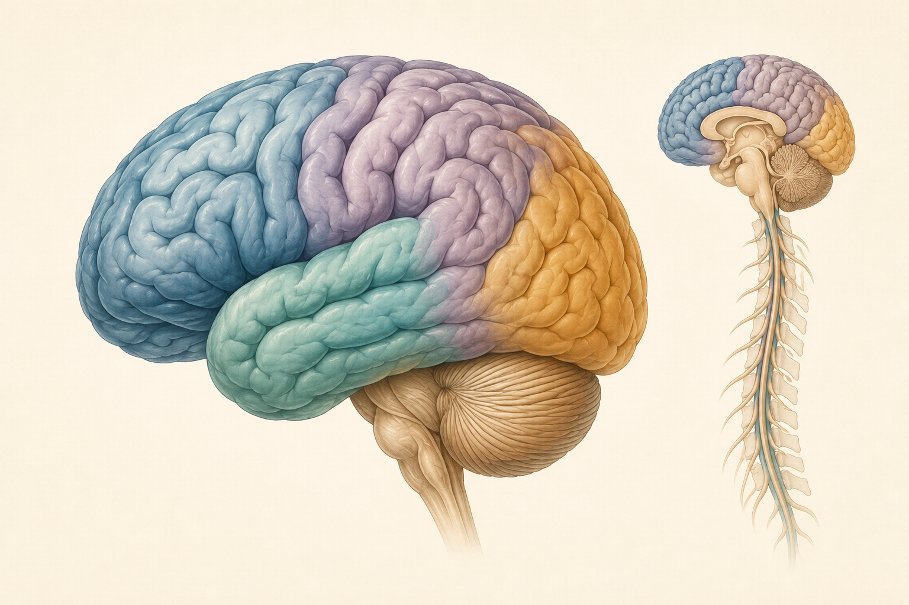
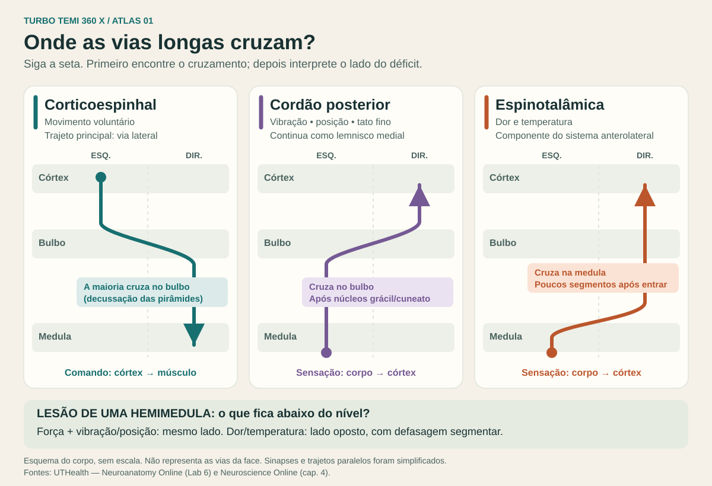

Semiologia e síndromes neurológicas
Exame neurológico completo, um método reprodutível para topografar lesões e as síndromes que você precisa reconhecer no plantão e na prova. Cada achado é lido como uma coordenada no neuroeixo; a combinação deles aponta o nível, o lado e a via.
Método de topografia lesional
Duas perguntas em ordem fixa: onde (topografia) e só depois o quê (etiologia). Quem inverte a ordem pede exame de imagem errado, no lugar errado.
Os cinco passos
| Passo | Pergunta | Como responder |
|---|---|---|
| 1. Sistema | Qual via está doente: motora, sensitiva, cerebelar, nervos cranianos, cognição, autonômica? | Inventário dos achados positivos e dos negativos relevantes (o que está poupado importa tanto quanto o que está lesado). |
| 2. Nível | Central ou periférico? Se central: supratentorial, tronco ou medula? Se periférico: raiz, plexo, nervo, junção ou músculo? | Sinais de 1º neurônio (UMN) vs 2º neurônio (LMN); sinais corticais; sinais cruzados; nível sensitivo; distribuição (hemicorpo, dermátomo, bota-luva, proximal, distal). |
| 3. Lado | A lesão é ipsi ou contralateral aos achados? | Regras de cruzamento: piramidal cruza no bulbo; espinotalâmico cruza 1–2 segmentos acima da entrada; cordão posterior cruza no bulbo; cerebelo é ipsilateral; nervos cranianos são ipsilaterais à lesão de tronco. |
| 4. Lesão única? | Um só ponto explica tudo? | Se sim, é o diagnóstico topográfico. Se não: multifocal (EM, vasculite, metástases, êmbolos) ou difuso (encefalopatia, polineuropatia, miopatia). |
| 5. Tempo | Como se instalou e como evolui? | Súbito = vascular; segundos–minutos = ictal/sincopal; horas–dias = infeccioso/inflamatório/metabólico; semanas–meses = neoplásico/compressivo; meses–anos = degenerativo; flutuante = JNM/funcional/metabólico. |
Os sete níveis do neuroeixo e a assinatura de cada um
| Nível | Assinatura semiológica | Achados que pedem outra explicação |
|---|---|---|
| Córtex | Sinais corticais: afasia, negligência, apraxia, agnosia, hemianopsia/quadrantanopsia, crise focal, perda sensitiva cortical, desvio conjugado do olhar, déficit desproporcionado (braquiofacial ou crural). | Nível sensitivo; sinais cruzados; déficit em dermátomo. |
| Subcortical (cápsula, tálamo, núcleos da base) | Hemiparesia proporcionada (face = braço = perna) sem sinais corticais; hemianestesia de todas as modalidades (tálamo); movimentos anormais (núcleos da base). | Sinais corticais exuberantes tornam uma lacuna motora pura menos provável; afasia e negligência podem ocorrer em lesões talâmicas/subcorticais. |
| Tronco | Sinais cruzados: nervo craniano ipsilateral + via longa contralateral; vertigem, diplopia, disartria, disfagia, Horner, alterações de olhar conjugado e INO. | Sinais corticais. |
| Cerebelo | Ataxia ipsilateral (apendicular = hemisfério; tronco/marcha = vérmis), dismetria, disdiadococinesia, tremor de intenção, nistagmo, fala escandida, hipotonia. Sem fraqueza. | Fraqueza verdadeira, hiperreflexia, perda sensitiva. |
| Medula | Nível sensitivo; para/tetraparesia; esfíncteres; UMN abaixo e LMN no nível; face poupada; dissociações (Brown-Séquard, siringomielia, cordão anterior/posterior). | Nervos cranianos, afasia, campo visual. |
| Raiz / plexo / nervo | LMN: hipo/arreflexia, atrofia, fasciculações, hipotonia; distribuição em dermátomo/miótomo (raiz), multirradicular num membro (plexo), território de um nervo (mono), bota-luva (polineuropatia). Dor radicular. | Babinski, hiperreflexia, nível sensitivo. |
| Junção / Músculo | Fraqueza sem alteração sensitiva: fatigável, ocular e bulbar (JNM); proximal, simétrica, com CK (miopatia). Reflexos preservados (JNM, miopatia inicial) ou reduzidos (LEMS, miopatia avançada). | Qualquer déficit sensitivo, Babinski. |
Primeiro neurônio versus segundo neurônio
| Achado | 1º neurônio (UMN) | 2º neurônio (LMN) |
|---|---|---|
| Distribuição | Padrão piramidal: extensores do MS e flexores/dorsiflexores do MI; hemicorpo ou abaixo de um nível | Miótomo, nervo, ou distal/proximal simétrico |
| Tônus | Espasticidade (velocidade-dependente, canivete) | Hipotonia / flacidez |
| Reflexos | Exaltados, clônus, difusão de área reflexógena | Diminuídos ou abolidos |
| Cutâneo-plantar | Babinski | Flexor ou indiferente |
| Trofismo | Sem atrofia (apenas por desuso, tardia) | Atrofia precoce e marcada |
| Fasciculações | Ausentes | Presentes (corno anterior, raiz) |
| Cutâneo-abdominais | Abolidos do lado da paresia | Preservados (exceto lesão radicular T7–T12) |
Cortical ou subcortical
Aponta para o córtex
- Afasia, apraxia, agnosia, negligência, anosognosia
- Hemianopsia ou quadrantanopsia homônima
- Crise epiléptica focal
- Perda sensitiva cortical (grafestesia, estereognosia, extinção) com modalidades primárias preservadas
- Desvio conjugado do olhar para o lado da lesão
- Déficit desproporcionado (braquiofacial na ACM, crural na ACA)
Aponta para o subcortical
- Hemiparesia proporcionada face = braço = perna (cápsula interna, base da ponte)
- Síndromes lacunares: motora pura, sensitiva pura, sensitivo-motora, hemiparesia atáxica, disartria–mão desajeitada
- Hemianestesia de todas as modalidades com dor central (tálamo)
- Movimentos anormais: hemibalismo, coreia, distonia, parkinsonismo
- Ausência de sinais corticais apesar de déficit extenso
Tempo de instalação: a segunda pergunta
| Perfil temporal | Família etiológica | Exemplos |
|---|---|---|
| Súbito, máximo no início | Vascular | AVC isquêmico, hemorragia, trombose venosa (pode ser subagudo) |
| Segundos a minutos, estereotipado, recorrente | Paroxístico | Crise epiléptica, AIT, síncope, aura de enxaqueca (marcha em minutos), VPPB |
| Horas a poucos dias | Infeccioso, inflamatório, tóxico-metabólico | Meningoencefalite, ADEM, encefalopatia hepática/urêmica, hiponatremia, Guillain-Barré (dias) |
| Dias a semanas, remitente-recorrente | Desmielinizante / autoimune | Esclerose múltipla, NMOSD, encefalite autoimune, vasculite |
| Semanas a meses, progressivo | Neoplásico / compressivo / infeccioso crônico | Tumor, abscesso, hematoma subdural crônico, compressão medular, tuberculose, HIV |
| Meses a anos, lentamente progressivo | Degenerativo / hereditário / metabólico crônico | Parkinson, ELA, Alzheimer, ataxias hereditárias, polineuropatia diabética |
| Flutuante ao longo do dia ou com esforço | Junção neuromuscular, metabólico, funcional | Miastenia gravis, hipoglicemia, transtorno neurológico funcional |
Regras de ouro do plantão
Exame neurológico completo
Sequência fixa, sempre a mesma, para que a omissão fique evidente. Cada item abaixo diz como testar e o que o achado localiza.
Checklist do exame
Marque enquanto examina. O progresso fica salvo neste navegador.Estado mental e funções corticais superiores
| Domínio | Como testar | Alteração → topografia |
|---|---|---|
| Nível de consciência | Resposta a voz, toque e dor; Glasgow (E4 V5 M6) ou FOUR; RASS na UTI | Rebaixamento = disfunção bihemisférica difusa ou do sistema reticular ativador (tronco superior/diencéfalo). Rebaixamento com sinal focal = lesão estrutural até prova em contrário. |
| Atenção | Meses do ano ao contrário, span de dígitos (normal ≥ 5 direto), CAM-ICU | Desatenção flutuante = delirium (encefalopatia difusa). Atenção é pré-requisito para testar memória e linguagem. |
| Orientação | Tempo, espaço, pessoa (perde-se nesta ordem) | Difuso; desorientação em pessoa isolada sugere quadro funcional/psiquiátrico. |
| Memória | Registro e evocação de 3 palavras aos 5 min; memória remota; MEEM / MoCA | Anterógrada: hipocampo/temporal medial bilateral, tálamo, corpos mamilares (Wernicke-Korsakoff). Confabulação = frontal/diencefálico. |
| Linguagem | Fala espontânea (fluência), compreensão (ordens de 1–3 etapas), repetição, nomeação, leitura, escrita | Hemisfério dominante (esquerdo em ~95% dos destros e ~70% dos canhotos). Ver S03. |
| Praxia | Gestos simbólicos ("acene", "dê tchau"), uso de objeto imaginário, copiar figuras (construtiva), vestir-se | Ideomotora: parietal dominante. Construtiva e do vestir: parietal não dominante. |
| Gnosia | Reconhecer objetos pelo tato (estereognosia), rostos (prosopagnosia), extinção à dupla estimulação | Parietal contralateral; prosopagnosia: fusiforme direito/bilateral; negligência: parietal não dominante (direito). |
| Funções executivas | Fluência verbal (animais/min, normal ≥ 12–15), sequência de Luria (punho-borda-palma), go/no-go, teste do relógio | Frontal dorsolateral. Desinibição: orbitofrontal. Apatia/abulia: frontal medial (cíngulo). |
| Reflexos primitivos | Preensão palmar, palmomentoniano, sucção/snout, glabelar inesgotável | Liberação frontal (bilateral/difusa); preensão unilateral localiza o frontal contralateral. |
Nervos cranianos I–XII
| Nervo | Função / teste | Lesão: o que aparece | Localização e causas-chave |
|---|---|---|---|
| I Olfatório | Café, sabão em cada narina (não usar amônia: estimula o V) | Anosmia uni ou bilateral | Fratura da lâmina cribiforme, meningioma do sulco olfatório (Foster Kennedy), COVID, Parkinson precoce |
| II Óptico | Acuidade, campos por confrontação, fundoscopia, reflexo fotomotor direto/consensual, teste da lanterna oscilante | Amaurose monocular, escotoma central, DPAR (Marcus Gunn), papiledema, palidez de papila | Neurite óptica (dor à movimentação ocular, discromatopsia), NOIA, compressão. Campo: ver S08. |
| III Oculomotor | Elevação, adução, depressão (reto superior, medial, inferior, oblíquo inferior), levantador da pálpebra, esfíncter pupilar | Ptose, olho "para baixo e para fora", midríase (se compressivo), diplopia oblíqua | Pupila envolvida: investigar compressão/aneurisma urgentemente. Pupila poupada pode ocorrer em microangiopatia, mas não exclui compressão, sobretudo em paresia parcial. III agudo: avaliação urgente e neuroimagem vascular conforme contexto. Mesencéfalo: Weber, Claude, Benedikt. |
| IV Troclear | Oblíquo superior: deprime o olho aduzido; inciclotorção | Diplopia vertical/torcional ao descer escadas e ler; cabeça inclinada para o lado oposto (Bielschowsky) | TCE (nervo longo e fino), microvascular, congênito descompensado |
| V Trigêmeo | Sensibilidade das 3 divisões, reflexo corneano (aferente V1, eferente VII), masseter/temporal, desvio da mandíbula, reflexo mandibular | Hipoestesia facial, corneano abolido, mandíbula desvia para o lado da lesão, dor lancinante (neuralgia) | Ângulo pontocerebelar, seio cavernoso, ponte; padrão "casca de cebola" = núcleo espinal (bulbo/medula cervical alta). Reflexo mandibular exaltado = pseudobulbar. |
| VI Abducente | Abdução | Diplopia horizontal, esotropia, pior ao olhar para o lado da lesão | Hipertensão intracraniana (falso localizatório), microvascular, ponte (Millard-Gubler, Foville), ápice petroso (Gradenigo), seio cavernoso |
| VII Facial | Franzir a testa, fechar os olhos com força, mostrar os dentes, assobiar; gustação 2/3 anteriores; lacrimejamento; hiperacusia | Periférica: tende a comprometer hemiface inteira, com lagoftalmo. Central: costuma poupar relativamente a fronte; esse sinal isolado não exclui AVC | Ver S04 |
| VIII Vestibulococlear | Sussurro/atrito de dedos, Weber e Rinne, nistagmo, HINTS, Dix-Hallpike, impulso cefálico | Hipoacusia (condutiva vs neurossensorial), vertigem, nistagmo | Neurite vestibular, VPPB, Menière, schwannoma vestibular, AICA/PICA (central) |
| IX Glossofaríngeo | Gustação 1/3 posterior, sensibilidade da faringe, reflexo do vômito (aferente) | Disfagia, reflexo do vômito abolido, neuralgia do IX (dor na garganta/ouvido ao deglutir, síncope) | Forame jugular (Vernet: IX, X, XI), bulbo lateral |
| X Vago | Elevação do palato ("ah"), voz, tosse, reflexo do vômito (eferente) | Úvula desvia para o lado são; voz anasalada, rouquidão, disfagia, regurgitação nasal | Bulbo (Wallenberg), forame jugular, laríngeo recorrente (tórax, tireoide) |
| XI Acessório | Esternocleidomastóideo (vira a cabeça para o lado contrário), trapézio (elevação do ombro) | Fraqueza de rotação da cabeça para o lado oposto; ombro caído; escápula alada lateral | Forame jugular, cirurgia cervical (esvaziamento), trauma |
| XII Hipoglosso | Protrusão e movimentos da língua, atrofia, fasciculações | Periférico: língua desvia para o lado da lesão, com atrofia e fasciculações. Central: desvia para o lado contrário, sem atrofia | Bulbo medial (Dejerine), ELA (bilateral com fasciculações), dissecção carotídea, base do crânio |
Motricidade: inspeção, tônus, força
Inspeção
- Atrofia: LMN, desuso, miopatia (proximal) ou neuropatia (distal, pé cavo). Compare circunferências.
- Fasciculações: contrações vermiculares visíveis; espontâneas e difusas com atrofia = corno anterior (ELA). Benignas: panturrilhas, pálpebras, sem fraqueza.
- Postura: mão em garra (ulnar), mão caída (radial), pé caído (fibular/L5), decorticação/descerebração, distonia.
- Movimentos anormais: tremor (repouso, postural, intenção), coreia, balismo, mioclonias, asterixis, tiques.
Tônus
- Espasticidade (piramidal): dependente da velocidade, "canivete", predomina em flexores do MS e extensores do MI.
- Rigidez (extrapiramidal): independente da velocidade, "cano de chumbo" ou "roda denteada" (com tremor); aumenta com manobra de Froment (movimento contralateral).
- Paratonia (gegenhalten): resistência proporcional ao esforço do examinador — frontal/difusa (demência, encefalopatia).
- Hipotonia: LMN, cerebelo, coreia, choque medular, fase aguda de AVC.
Força — escala MRC
| Grau | Definição |
|---|---|
| 0 | Nenhuma contração |
| 1 | Contração visível/palpável sem movimento |
| 2 | Movimento com gravidade eliminada |
| 3 | Vence a gravidade, não a resistência |
| 4 | Vence alguma resistência (4−, 4, 4+) |
| 5 | Força normal |
Manobras deficitárias (paresia sutil)
- Braços estendidos (Barré/Mingazzini de MMSS): queda com pronação = piramidal. Queda sem pronação, com "cambaleio" = funcional ou proprioceptiva.
- Mingazzini de MMII: decúbito dorsal, quadris e joelhos a 90°: a perna parética cai.
- Barré de MMII: decúbito ventral, pernas fletidas a 90°: a perna parética cai.
- Raimiste: antebraços verticais, cotovelos apoiados: a mão parética cai em flexão.
- Padrão piramidal: fraqueza maior em abdução do ombro, extensão do cotovelo e dos dedos, flexão do quadril, dorsiflexão.
Padrões que localizam
- Proximal simétrica → músculo (ou LEMS)
- Distal simétrica → polineuropatia (ou miopatia distal, ELA inicial)
- Fatigável, ocular/bulbar → junção neuromuscular
- Hemicorpo → hemisfério contralateral (proporcionada = cápsula; braquiofacial = córtex ACM; crural = ACA)
- Cruzada → tronco; poupando a face → bulbo medial ou medula cervical
Reflexos
| Reflexo | Nível | Nervo | Como obter | Nota |
|---|---|---|---|---|
| Bicipital | C5–C6 | Musculocutâneo | Polegar sobre o tendão na fossa cubital, percutir o polegar | Abolido em radiculopatia C5/C6 |
| Estilorradial (braquiorradial) | C5–C6 | Radial | Percutir o rádio distal com antebraço semipronado | Reflexo invertido (flexão dos dedos sem flexão do cotovelo) = mielopatia cervical C5–C6 |
| Tricipital | C7 (C6–C8) | Radial | Braço apoiado, cotovelo a 90°, percutir acima do olécrano | Abolido em radiculopatia C7 |
| Flexor dos dedos | C8–T1 | Mediano/ulnar | Percutir os dedos semifletidos do examinador sobre os do paciente | Hoffmann/Trömner exaltados = UMN cervical |
| Patelar | L2–L4 | Femoral | Joelho a 90°, percutir o tendão patelar; distração (Jendrassik) | Abolido em L4 / neuropatia femoral |
| Aquileu | S1–S2 | Tibial | Pé em leve dorsiflexão, percutir o tendão calcâneo; clônus | Abolido em S1 / polineuropatia; hiporreflexia bilateral em idosos pode ser normal |
| Cutâneo-abdominais | T7–T12 | Intercostais | Riscar os quadrantes do abdome de fora para dentro | Abolidos em UMN (EM, mielopatia); obesos/multíparas: pouco confiáveis |
| Cremastérico | L1–L2 | Genitofemoral | Riscar a face medial da coxa | Abolido em lesão medular/radicular alta |
| Bulbocavernoso / anal | S2–S4 | Pudendo | Compressão da glande/clitóris ou tração da sonda; contração anal | Retorno é marco tradicional da evolução do choque medular, cuja recuperação varia; ausência também pode ocorrer em lesão de cone/cauda |
| Cutâneo-plantar | L5–S2 | Tibial/fibular | Riscar a borda lateral da planta, do calcanhar aos metatarsos | Babinski = extensão do hálux ± abertura em leque; equivalentes: Chaddock, Oppenheim, Gordon |
Graduação
0 abolido · 1+ hipoativo · 2+ normal · 3+ vivo, sem clônus · 4+ exaltado com clônus
Assimetria vale mais que o valor absoluto. Hiperreflexia generalizada simétrica sem Babinski costuma ser constitucional ou ansiedade/hipertireoidismo.
Sinais patológicos
- Babinski: apoia disfunção piramidal quando presente; a sensibilidade é limitada e sua ausência não exclui lesão central.
- Hoffmann: pinçar a falange distal do dedo médio → flexão do polegar. UMN acima de C8, mas presente em hiperreflexia constitucional.
- Clônus (aquileu/patelar) sustentado: UMN.
- Reflexo mandibular exaltado: UMN acima da ponte (pseudobulbar); útil para diferenciar mielopatia cervical (mandibular normal) de lesão supra-pontina.
Sensibilidade
| Modalidade | Via | Cruzamento | Teste |
|---|---|---|---|
| Dor e temperatura | Espinotalâmico lateral | Comissura branca anterior, 1–2 segmentos acima da entrada | Palito descartável (não agulha), tubos frio/quente ou diapasão frio |
| Tato grosseiro | Espinotalâmico anterior | Idem | Algodão |
| Vibração | Cordão posterior → lemnisco medial | Bulbo (decussação lemniscal) | Diapasão 128 Hz em hálux, maléolo, tíbia; compare com o seu |
| Propriocepção | Cordão posterior | Bulbo | Posição do hálux/dedo com olhos fechados; Romberg |
| Tato fino discriminativo | Cordão posterior | Bulbo | Discriminação de dois pontos (polpa digital normal ≤ 5 mm) |
| Cortical | Córtex parietal (S1 e associativo) | — | Grafestesia, estereognosia, localização tátil, extinção à dupla estimulação simultânea |
Padrões e o que localizam
- Hemi-hipoestesia de todas as modalidades face + corpo → tálamo (VPL/VPM) ou cápsula/córtex (se com sinais corticais).
- Face de um lado, corpo do outro (dor/temperatura) → bulbo lateral (Wallenberg).
- Nível sensitivo no tronco → medula, 1–2 segmentos abaixo do nível real para o espinotalâmico.
- Dissociação: perde dor/temperatura, preserva vibração/propriocepção → cordão anterior ou centromedular (siringomielia, "em xale" suspensa). O inverso → cordão posterior (B12, tabes, cobre, EM).
- Hemissecção: propriocepção ipsilateral + dor/temperatura contralateral → Brown-Séquard.
- Dermátomo → raiz; território de nervo → mononeuropatia; bota e luva → polineuropatia.
- Sela (S2–S5) → cone medular / cauda equina.
Marcos de dermátomos
| C4 | Ombro / clavícula | T4 | Mamilo |
| C5 | Face lateral do braço | T6 | Apêndice xifoide |
| C6 | Polegar | T10 | Umbigo |
| C7 | Dedo médio | T12–L1 | Região inguinal |
| C8 | Dedo mínimo | L3 | Face anterior do joelho |
| T1 | Face medial do antebraço | L4 | Maléolo medial |
| T2 | Axila | L5 | Dorso do pé / hálux |
| S1 | Borda lateral do pé / calcanhar | S2–S5 | Sela / períneo |
Romberg positivo = piora nítida ao fechar os olhos (proprioceptivo ou vestibular). Paciente cerebelar oscila de olhos abertos: não é Romberg.
Coordenação
- Índex-nariz / índex-índex: dismetria e tremor de intenção (piora ao aproximar do alvo) = cerebelo ipsilateral.
- Calcanhar-joelho: dismetria de MMII; decompõe o movimento.
- Diadococinesia: pronação-supinação rápida; lenta e irregular = disdiadococinesia.
- Rechaço (Stewart-Holmes): soltar o braço fletido contra resistência: bate no próprio peito = hipotonia cerebelar.
- Fala: escandida, explosiva, silabada.
- Olhos: nistagmo evocado pelo olhar, sacadas hipermétricas, perseguição em sacadas.
Marcha e equilíbrio
| Marcha | Descrição | Localização |
|---|---|---|
| Hemiparética (ceifante) | Circundução do MI espástico, braço fletido e aduzido, pé em equino | UMN unilateral (hemisfério, cápsula, tronco) |
| Paraparética espástica (tesoura) | Pernas rígidas, coxas aduzidas cruzando, passos curtos arrastados | Medula (mielopatia), parassagital, paraparesia espástica hereditária, PC |
| Parkinsoniana | Passos curtos, festinação, ausência de balanço de braços, em bloco, congelamento, postura fletida, retropulsão | Núcleos da base (DP, parkinsonismos) |
| Atáxica cerebelar (ebriosa) | Base alargada, irregular, cambaleante, não piora ao fechar os olhos, não consegue tandem | Vérmis (tronco) / hemisférios (desvia para o lado da lesão) |
| Atáxica sensitiva (talonante) | Bate os calcanhares, olha para os pés, piora no escuro e ao fechar os olhos (Romberg +) | Cordão posterior, polineuropatia de fibras grossas |
| Escarvante (steppage) | Levanta muito o joelho para não arrastar o pé caído; bate a ponta do pé | Fibular comum, L5, polineuropatia (bilateral), Charcot-Marie-Tooth |
| Anserina (miopática) | Rebola, hiperlordose, Trendelenburg bilateral; Gowers ao levantar | Fraqueza proximal: miopatias, distrofias |
| Apráxica / magnética | Pés colados ao chão, base larga, passos curtos, dificuldade em iniciar; coordenação normal no leito | Frontal bilateral, HPN (tríade de Hakim-Adams: marcha, demência, incontinência), vascular subcortical |
| Cautelosa | Lenta, base alargada, agarra-se a apoios, sem sinal focal | Idoso, medo de queda, multifatorial |
| Antálgica | Encurta a fase de apoio do lado dolorido | Ortopédica/dor |
| Funcional | Inconsistente, esforço excessivo, joelhos que cedem sem queda, astasia-abasia, melhora com distração | Transtorno neurológico funcional (diagnóstico por sinais positivos) |
Sinais meníngeos
- Rigidez de nuca: resistência à flexão passiva (não à rotação, que é cervicoartrose).
- Kernig: quadril fletido a 90°, extensão do joelho provoca dor/resistência.
- Brudzinski: flexão do pescoço provoca flexão dos quadris/joelhos.
- Jolt accentuation: cefaleia piora ao girar a cabeça 2–3×/s.
Exame neurológico na UTI em dez minutos
- Sedação e delirium: RASS; se RASS ≥ −3, CAM-ICU.
- Consciência: Glasgow (com melhor resposta) ou FOUR (útil no intubado).
- Pupilas: tamanho, simetria, reatividade (pupilometria se disponível).
- Olhos: posição de repouso, desvio conjugado, movimentos espontâneos, oculocefálico (se coluna cervical liberada), corneano.
- Face: simetria à careta/dor; reflexo de tosse e vômito no intubado.
- Padrão respiratório e assincronia ventilatória.
- Motor: simetria da resposta à dor, postura (decorticação/descerebração), tônus, MRC-sum score se colaborativo (< 48 = fraqueza adquirida na UTI).
- Reflexos: profundos, Babinski, clônus.
- Sinais meníngeos e nível sensitivo quando possível.
- Registre em linguagem que permita comparação a cada turno.
Sinais positivos de transtorno neurológico funcional
O diagnóstico é feito por sinais positivos de inconsistência interna, não por exclusão. Coexistência com doença orgânica é comum, e o rótulo não dispensa investigação quando há sinal de alarme.
| Sinal | Como testar | Interpretação |
|---|---|---|
| Hoover | Paciente em decúbito; peça flexão do quadril do lado "forte" contra resistência, com a mão sob o calcanhar "fraco" | Extensão automática do quadril "fraco" que não aparece no comando direto |
| Queda sem pronação | Braços estendidos | Cai sem pronar (piramidal prona) |
| Fraqueza que cede (give-way) | Força testada | Colapso súbito e intermitente da força, com força plena por instantes |
| Arrastamento (drag) | Marcha | Perna arrastada como peso morto, quadril em rotação externa/interna, sem circundução |
| Entrainment do tremor | Bater ritmo com a mão contralateral | Tremor funcional assume o ritmo imposto ou para |
| Divisão exata na linha média | Vibração no esterno/testa | Diferença de vibração em osso único não tem substrato anatômico |
| Campo tubular | Confrontação a 1 m e a 2 m | Campo não se expande com a distância |
Linguagem e afasias
Três perguntas organizam os protótipos das oito afasias clássicas: é fluente? compreende? repete? A nomeação frequentemente está alterada em diferentes afasias e deve sempre ser testada; isoladamente, não separa os padrões. A repetição é o eixo que separa as afasias perissilvianas (repetição ruim) das transcorticais (repetição preservada).
Classificador de afasia
Escolha os três eixos e leia a síndrome, a topografia e a artéria.As oito afasias clássicas
| Afasia | Fluência | Compreensão | Repetição | Topografia | Artéria | Sinais associados |
|---|---|---|---|---|---|---|
| Broca (motora) | Não fluente | Preservada | Ruim | Giro frontal inferior posterior (áreas 44/45) e substância branca subjacente, opérculo frontal | ACM divisão superior (esquerda) | Hemiparesia braquiofacial direita, apraxia bucofacial, desvio do olhar para a esquerda, paciente consciente do déficit e frustrado |
| Wernicke (sensorial) | Fluente | Comprometida | Ruim | Giro temporal superior posterior (área 22) | ACM divisão inferior (esquerda) | Parafasias, neologismos, jargão; anosognosia; quadrantanopsia superior direita; sem paresia — confundida com psicose ou delirium |
| Condução | Fluente | Preservada | Ruim | Fascículo arqueado / giro supramarginal / ínsula | Ramos parietais da ACM | Parafasias fonêmicas com autocorreção (conduite d'approche); repetição desproporcionalmente ruim; hipoestesia cortical à direita |
| Global | Não fluente | Comprometida | Ruim | Todo o território perissilviano | ACM tronco (M1) esquerda | Hemiplegia direita, hemianopsia, desvio do olhar; evolui para Broca se recupera |
| Transcortical motora | Não fluente | Preservada | Preservada | Frontal dorsolateral / área motora suplementar, anterior ou superior a Broca | Zona limítrofe ACA–ACM | Mutismo inicial, ecolalia; paresia crural; hipotensão/hipoperfusão como causa |
| Transcortical sensitiva | Fluente | Comprometida | Preservada | Têmporo-parieto-occipital posterior a Wernicke | Zona limítrofe ACM–ACP | Ecolalia, repete sem entender; anomia grave; hemianopsia; Alzheimer avançado |
| Transcortical mista (isolamento) | Não fluente | Comprometida | Preservada | Zonas limítrofes anterior e posterior, poupando a área perissilviana | Hipoperfusão global (parada cardíaca, oclusão carotídea) | Só repete; ecolalia; completa provérbios; "ilha" de linguagem isolada |
| Anômica | Fluente | Preservada | Preservada | Giro angular, temporal inferior — pouco localizatória | Variável | Circunlóquios; fase de recuperação de qualquer afasia; encefalopatia, demência, lesão expansiva |
Diferenciais que não são afasia
- Disartria
- Articulação ruim com linguagem íntegra (escreve normalmente). Flácida (LMN), espástica (UMN bilateral), atáxica (cerebelo), hipocinética (Parkinson), mista (ELA).
- Afemia
- Mutismo ou fala apráxica com escrita e compreensão normais — lesão pequena da área de Broca/opérculo; recuperação boa.
- Mutismo acinético
- Não fala nem se move, mas está acordado — frontal medial bilateral (ACA), diencéfalo.
- Surdez verbal pura
- Não compreende fala, mas lê e escreve — temporal bilateral ou lesão subcortical esquerda que isola Wernicke.
- Afasia subcortical
- Tálamo (fluente, hipofônica, flutuante com a atenção) ou estriado/cápsula (disartria + anomia + repetição relativamente boa).
- Delirium / psicose
- Fala desorganizada com atenção comprometida; Wernicke mantém atenção e comportamento não bizarro fora da linguagem.
- Alexia sem agrafia
- Lê mal, escreve bem (e não lê o que escreveu). Occipital esquerdo + esplênio do corpo caloso (ACP esquerda). Hemianopsia direita associada.
- Síndrome de Gerstmann
- Acalculia, agrafia, agnosia digital, desorientação direita–esquerda. Giro angular esquerdo (parietal dominante).
- Aprosodia
- Análogo direito das afasias: perde a melodia emocional da fala (motora, frontal direita) ou não a entende (sensorial, temporal direita).
- Apraxia da fala
- Erros de programação articulatória, inconsistentes, com tentativas e busca; frequente com Broca.
- Afasia progressiva primária
- Início insidioso, meses–anos: variantes não fluente/agramática, semântica e logopênica. Degenerativa, não vascular.
Exame da linguagem à beira do leito
- Fala espontânea: "Conte como foi sua manhã." Observe débito, esforço, prosódia, gramática, parafasias (fonêmicas: "cadeila"; semânticas: "mesa" por "cadeira"), neologismos.
- Compreensão: "Feche os olhos" → "Aponte o teto e depois a porta" → "Toque a orelha esquerda com a mão direita." Evite ordens de linha média (fechar olhos, abrir boca), que são preservadas em afasias graves.
- Repetição: palavra, frase curta, frase com conectivos ("Nem aqui, nem ali, nem lá").
- Nomeação: relógio, ponteiro, pulseira (alta e baixa frequência); partes do corpo; cores.
- Leitura em voz alta e compreensão do que leu.
- Escrita: uma frase espontânea (não o nome, que é automatizado).
Paralisia facial
O padrão facial ajuda a localizar: lesões supranucleares tendem a poupar relativamente a fronte; lesões nucleares ou infranucleares costumam afetar toda a hemiface. Porém, AVC também pode causar fraqueza da face superior. A testa isoladamente não separa central de periférico: examine membros, linguagem, olhar e demais nervos cranianos.
Topografia da paralisia facial
Responda em ordem. O painel devolve o nível da lesão e o que investigar.Se periférica: marque o que estiver presente
Central versus periférica
| Achado | Central (supranuclear) | Periférica (nuclear / infranuclear) |
|---|---|---|
| Fronte | Poupada (franze dos dois lados) | Acometida (não franze, não eleva a sobrancelha) |
| Fechamento ocular | Preservado ou discretamente fraco | Lagoftalmo; sinal de Bell (olho roda para cima ao tentar fechar) |
| Lado da lesão | Contralateral à face paralisada | Ipsilateral |
| Dissociação | Voluntária pior que emocional (lesão cortical/capsular); emocional pior que voluntária (tálamo, núcleos da base, frontal medial) | Ambas igualmente acometidas |
| Companhia | Hemiparesia do mesmo lado da face, afasia, negligência, hemianopsia | VI, VIII, V, ataxia, hemiparesia contralateral (se pontina); gustação, lacrimejamento, hiperacusia |
| Causa típica | AVC, tumor, lesão subcortical | Bell, Ramsay Hunt, otite, trauma, tumor de parótida, Guillain-Barré, sarcoidose, Lyme, diabetes |
Trajeto do nervo facial e níveis de lesão
| Nível | Motor | Lacrimejamento | Hiperacusia | Gustação | Sinais de vizinhança |
|---|---|---|---|---|---|
| Núcleo / fascículo pontino | Periférico | Normal | Não | Normal | VI ipsilateral, olhar conjugado, hemiparesia contralateral, INO |
| Ângulo pontocerebelar | Periférico | Reduzido (nervo intermédio) | Pode | Alterada | VIII (hipoacusia neurossensorial, zumbido, vertigem), V (corneano abolido), ataxia; schwannoma vestibular, meningioma |
| Meato acústico interno / gânglio geniculado | Periférico | Reduzido (petroso maior) | Sim | Alterada | Ramsay Hunt (VZV): vesículas, otalgia; fratura do temporal |
| Entre geniculado e estapédio | Periférico | Normal | Sim | Alterada | Otite média, colesteatoma |
| Entre estapédio e corda do tímpano | Periférico | Normal | Não | Alterada | Otite, mastoidite, cirurgia otológica |
| Distal à corda (forame estilomastóideo, parótida) | Periférico, motor puro | Normal | Não | Normal | Tumor de parótida (acomete ramos isoladamente, progressivo), trauma, Bell (edema no canal) |
A paralisia de Bell costuma ter hiperacusia e disgeusia (lesão no canal do facial, proximal à corda do tímpano) com lacrimejamento reflexo variável; a topografia fina importa mais quando os achados apontam para tronco, ângulo pontocerebelar ou parótida.
Paralisia de Bell: conduta e sinais de alarme
Diagnóstico
- Periférica, unilateral, instalação em < 72 h, sem outro sinal neurológico; dor retroauricular e disgeusia são comuns.
- Exame otológico (vesículas, otite, colesteatoma) e palpação da parótida.
- Imagem só se atípica: instalação lenta, sem recuperação em 3–4 meses, recorrente, ramos isolados, outros nervos cranianos, sinais de tronco.
- Glicemia; sorologia HIV conforme contexto; em áreas endêmicas, Lyme.
Tratamento
- Corticoide oral em até 72 h: prednisona 60 mg/dia por 5 dias com redução em 5 dias, ou 50 mg/dia por 10 dias (esquemas dos ensaios de Engström 2008 e Sullivan 2007; diretriz AAN 2012).
- Antiviral (valaciclovir 1 g 3×/dia por 7 dias) associado ao corticoide pode ser oferecido; benefício adicional pequeno em Bell, indicado em Ramsay Hunt.
- Proteção ocular: lágrima artificial de dia, pomada e oclusão à noite; encaminhar se ceratite.
- Fisioterapia facial; toxina botulínica para sincinesias tardias.
Escala de House-Brackmann
| Grau | Descrição |
|---|---|
| I | Normal |
| II | Disfunção leve: fraqueza só ao exame atento; fechamento ocular completo |
| III | Moderada: assimetria evidente, fechamento ocular completo com esforço, sincinesias |
| IV | Moderada-grave: assimetria desfigurante, fechamento ocular incompleto |
| V | Grave: movimento mínimo, olho não fecha |
| VI | Paralisia total |
Síndromes motoras
A distribuição da fraqueza é a coordenada mais barata do exame. Leia-a junto com reflexos, tônus e sensibilidade.
Padrão de fraqueza → topografia
| Padrão | Localização provável | Confirmação | Causas típicas |
|---|---|---|---|
| Hemiparesia braquiofacial (face e braço > perna) | Córtex convexidade frontoparietal (ACM) | Afasia (E) ou negligência (D), desvio do olhar, crise | AVC de ACM, tumor, hematoma lobar |
| Hemiparesia crural (perna > braço) | Córtex medial (ACA), parassagital | Abulia, reflexo de preensão, incontinência | AVC de ACA, meningioma parassagital (paraparesia se bilateral) |
| Hemiparesia proporcionada (face = braço = perna) | Cápsula interna, coroa radiada, base da ponte | Ausência de sinais corticais; motora pura | Lacuna, hemorragia capsular/putaminal |
| Hemiparesia poupando a face | Bulbo medial ou medula cervical alta (Brown-Séquard) | XII ipsilateral (bulbo); nível sensitivo (medula) | Dejerine, mielopatia, EM |
| Cruzada (NC ipsilateral + corpo contralateral) | Tronco | O nervo define o nível (III mesencéfalo; VI/VII ponte; XII bulbo) | AVC de tronco, tumor, EM |
| Paraparesia espástica | Medula torácica (ou parassagital bilateral) | Nível sensitivo, esfíncteres, cutâneo-abdominais abolidos | Compressão, mielite, HTLV-1, EM, B12, HPE |
| Paraparesia flácida | Cauda equina, polirradiculoneuropatia, cone, choque medular | Arreflexia, sela, dor radicular (cauda); ascendente (GBS) | Hérnia discal volumosa, GBS, trauma agudo |
| Tetraparesia espástica | Medula cervical, tronco bilateral, hemisférios bilaterais | Nível sensitivo; Lhermitte; mandibular normal (cervical) vs exaltado (supra-pontino) | Espondilose, trauma, EM, locked-in (ponte) |
| Tetraparesia flácida | Nervo / JNM / músculo / choque medular | Sensitivo, reflexos, fatigabilidade, CK, face | GBS, miastenia, botulismo, hipocalemia, ICUAW, mielopatia aguda |
| Monoparesia | Córtex (pequena lesão), raiz, plexo, nervo | UMN → córtex; LMN → SNP; território | AVC cortical pequeno, radiculopatia, plexopatia, mononeuropatia |
| Proximal simétrica | Músculo (ou LEMS, GBS) | Sem sensitivo, reflexos preservados, CK | Miopatias inflamatórias, estatinas, hipotireoidismo, corticoide, distrofias |
| Distal simétrica | Polineuropatia | Bota-luva, arreflexia distal | Diabetes, álcool, B12, quimioterapia, CIDP, CMT |
| Fatigável, ocular, bulbar | Junção neuromuscular | Ptose flutuante, teste do gelo, sem sensitivo, reflexos normais | Miastenia gravis; botulismo (descendente, pupilas); LEMS |
Síndrome piramidal, doença do neurônio motor e diferenciais
ELA e o padrão UMN + LMN
- Fraqueza assimétrica, progressiva, com atrofia e fasciculações (LMN) e hiperreflexia, Babinski, espasticidade (UMN) sem déficit sensitivo, sem alteração esfincteriana ou ocular.
- Início bulbar (disartria, disfagia, língua atrófica com fasciculações) ou apendicular (mão em "split hand": atrofia do tênar/primeiro interósseo poupando o hipotênar).
- Reflexo mandibular exaltado + labilidade emocional = pseudobulbar.
- Diferencial obrigatório: mielopatia cervical espondilótica (LMN nos braços, UMN nas pernas, com sinais sensitivos e sem envolvimento bulbar), neuropatia motora multifocal (bloqueios de condução, tratável), miopatia por corpos de inclusão, atrofia muscular espinhal do adulto, Kennedy.
Paralisia bulbar versus pseudobulbar
| Bulbar (LMN IX–XII) | Pseudobulbar (UMN bilateral) | |
|---|---|---|
| Língua | Atrófica, fasciculante, flácida | Pequena, espástica, lenta, sem atrofia |
| Reflexo mandibular | Normal ou ausente | Exaltado |
| Reflexo do vômito | Abolido | Exaltado |
| Fala | Anasalada, flácida | Espástica, "estrangulada" |
| Labilidade emocional | Ausente | Riso e choro espasmódicos |
| Causas | ELA, GBS, miastenia (mimetiza), Wallenberg, tumor de base | AVCs bilaterais, ELA, EM, PSP |
Síndromes extrapiramidais
| Síndrome | Semiologia | Topografia | Causas |
|---|---|---|---|
| Parkinsonismo | Bradicinesia (obrigatória: lentidão com decremento de amplitude) + rigidez e/ou tremor de repouso 4–6 Hz; assimetria, micrografia, hipomimia, marcha em bloco, instabilidade postural tardia | Substância negra / estriado (via nigroestriatal) | Doença de Parkinson; drogas (neurolépticos, metoclopramida, flunarizina); vascular (predomínio em MMII); atípicos |
| Sinais de alarme para parkinsonismo atípico | Quedas precoces, paralisia do olhar vertical (PSP); disautonomia precoce, sinais cerebelares, estridor (AEM); apraxia, membro alienígena, mioclonia cortical assimétrica (DCB); alucinações e flutuações precoces (DCL); simetria e ausência de tremor (drogas, vascular) | — | PSP, AEM, DCB, DCL |
| Coreia | Movimentos breves, irregulares, migratórios, incorporados a gestos; "impersistência motora" (língua de camaleão, mão de ordenhadeira) | Caudado / estriado | Huntington, Sydenham, lúpus/SAF, hiperglicemia não cetótica (hemicoreia), levodopa, gestação, policitemia |
| Hemibalismo | Arremesso violento proximal de um hemicorpo | Núcleo subtalâmico contralateral | AVC lacunar, hiperglicemia |
| Distonia | Contração sustentada com posturas anormais e torção; truque sensitivo | Putâmen / rede córtico-estriatal | Drogas (aguda: antieméticos, neurolépticos), Wilson, genética, PC, focal idiopática |
| Mioclonia | Abalos súbitos, breves, em choque; positiva ou negativa (asterixis) | Cortical, subcortical, tronco, medula | Encefalopatia metabólica (hepática, urêmica, CO2), pós-anóxica (Lance-Adams), Creutzfeldt-Jakob, epilepsias mioclônicas, drogas (serotoninérgicos, opioides) |
| Tiques | Estereotipados, suprimíveis, com urgência premonitória | Circuitos córtico-estriatais | Tourette, tiques transitórios |
Tremor: classifique pela situação em que aparece
| Tipo | Quando | Localização / causa |
|---|---|---|
| Repouso | Membro relaxado, some ao iniciar movimento, aumenta com distração | Parkinsonismo (4–6 Hz, "contar dinheiro") |
| Postural | Braços estendidos | Essencial (bilateral, melhora com álcool, história familiar), fisiológico exacerbado (ansiedade, hipertireoidismo, cafeína, beta-agonista, valproato, lítio), neuropático |
| Intenção (cinético) | Piora ao aproximar do alvo | Cerebelo / vias cerebelares |
| Holmes (rubral) | Repouso + postural + intenção, lento, grosseiro | Mesencéfalo (núcleo rubro / via dentato-rubro-talâmica) |
| Ortostático | Só em pé, "pernas trêmulas", 13–18 Hz | Primário |
| Funcional | Variável, distrátil, entrainment | Transtorno funcional |
Síndromes sensitivas
Duas vias com cruzamentos em níveis diferentes fazem da sensibilidade o instrumento mais preciso para o lado e o nível da lesão medular e de tronco.
Padrão sensitivo → topografia
| Padrão | Localização | Detalhe que confirma |
|---|---|---|
| Perda cortical (grafestesia, estereognosia, extinção, localização) com modalidades primárias preservadas | Parietal contralateral | Apraxia, negligência (D), Gerstmann (E), quadrantanopsia inferior |
| Hemianestesia de todas as modalidades, face incluída, ± dor central | Tálamo (VPL/VPM) contralateral | Sem paresia (sensitivo puro) ou com (talamocapsular); Dejerine-Roussy: dor em queimação semanas depois, alodinia, mão talâmica |
| Face de um lado, corpo do outro (dor/temperatura) | Bulbo lateral ipsilateral à face | Wallenberg clássico: vertigem, Horner, disfagia, ataxia ipsilateral; geralmente sem paresia |
| Perda de vibração/propriocepção contralateral com XII ipsilateral | Bulbo medial | Dejerine: hemiparesia contralateral poupando a face |
| Nível sensitivo horizontal no tronco | Medula | O nível espinotalâmico fica 1–2 segmentos abaixo da lesão; procure nível de sudorese e reflexos cutâneo-abdominais |
| Propriocepção ipsilateral + dor/temperatura contralateral abaixo da lesão | Hemissecção (Brown-Séquard) | Paresia UMN ipsilateral; faixa de anestesia radicular no nível |
| Dissociação siringomiélica suspensa (em xale), tátil preservado | Centromedular cervical | Atrofia das mãos, arreflexia de MMSS, escoliose; Chiari |
| Dor/temperatura bilateral abaixo do nível com propriocepção preservada | Cordão anterior (2/3 anteriores) | Paraparesia; artéria espinhal anterior (cirurgia de aorta, hipotensão, dissecção) |
| Vibração/propriocepção perdidas, dor/temperatura preservadas, Romberg + | Cordão posterior | Lhermitte; B12 (com sinais de UMN = degeneração combinada), cobre, tabes, EM, HIV, óxido nitroso |
| Sela (S2–S5) ± retenção | Cone / cauda equina | Simétrica e precoce (cone) vs assimétrica e dolorosa (cauda) |
| Faixa em dermátomo com dor irradiada | Raiz | Hiporreflexia do reflexo correspondente, fraqueza miotomal, Lasègue/Spurling |
| Território de um nervo | Mononeuropatia | Tinel, sítio de compressão; mononeurite múltipla = vasculite, diabetes, hanseníase |
| Bota e luva simétrica, ascendente | Polineuropatia dependente do comprimento | Arreflexia aquileia; fibras finas (dor, temperatura, autonômico, queimação) vs grossas (vibração, propriocepção, ataxia) |
| Perda de propriocepção + vibração com arreflexia, sem fraqueza | Gânglio da raiz dorsal (ganglionopatia) | Não dependente do comprimento, assimétrica, face; Sjögren, paraneoplásica (anti-Hu), cisplatina, B6 em excesso |
Detalhes que mudam a conduta
Tronco encefálico
O padrão clássico de nervo craniano ipsilateral com via longa contralateral favorece tronco encefálico. O nervo ajuda a definir o nível; a distribuição medial/lateral orienta o território vascular, com variações anatômicas e possíveis lesões múltiplas.
A regra dos 4 Gates, Intern Med J 2005
Síndromes clássicas do tronco
| Síndrome | Nível / coluna | Ipsilateral | Contralateral | Artéria |
|---|---|---|---|---|
| Weber | Mesencéfalo ventral (pedúnculo) | III (ptose, midríase, olho para fora e para baixo) | Hemiparesia (face incluída) | Ramos da ACP / basilar |
| Claude | Mesencéfalo tegmento (n. rubro, pedúnculo cerebelar superior) | III | Ataxia, tremor | ACP |
| Benedikt | Mesencéfalo (pedúnculo + n. rubro) | III | Hemiparesia + coreoatetose/tremor | ACP |
| Nothnagel | Mesencéfalo dorsal (teto) | III + ataxia (pedúnculo cerebelar superior) | — | Tumor da região pineal |
| Parinaud | Mesencéfalo dorsal (comissura posterior) | Paralisia do olhar para cima, dissociação luz-perto, nistagmo de convergência-retração, retração palpebral, pseudo-Argyll Robertson | Pineal, hidrocefalia, AVC | |
| Millard-Gubler | Ponte ventral | VI e VII periférico | Hemiparesia | Paramedianas da basilar |
| Foville | Ponte dorsal (PPRF / núcleo VI) | Paralisia do olhar conjugado para a lesão + VII | Hemiparesia | Basilar |
| Raymond | Ponte ventral | VI | Hemiparesia | Basilar |
| Marie-Foix / AICA | Ponte lateral | PFP, hipoacusia, vertigem, hipoestesia facial, ataxia, Horner | Dor/temperatura no corpo | AICA |
| Locked-in | Ponte ventral bilateral | Tetraplegia, anartria, paralisia horizontal do olhar; consciência e movimentos verticais/piscar preservados | Basilar (trombose), mielinólise pontina | |
| Wallenberg | Bulbo lateral | Horner, dor/temperatura na face, ataxia, disfagia/rouquidão (ambíguo), vertigem/nistagmo, lateropulsão, soluços | Dor/temperatura no corpo | PICA (ou vertebral, mais comum) |
| Dejerine | Bulbo medial | XII (língua desvia para a lesão) | Hemiparesia poupando a face, perda de vibração/propriocepção | Espinhal anterior / vertebral |
| Topo da basilar | Mesencéfalo + tálamo + occipital | Sonolência, alterações pupilares e de olhar vertical, alucinações pedunculares, hemianopsias, amnésia — pouca fraqueza | Embolia para a bifurcação da basilar | |
Olhos, pupilas e visão
Campo visual, pupila e motricidade ocular são três exames de dois minutos que atravessam todo o neuroeixo, do nervo óptico ao lobo occipital.
Via óptica interativa
Clique num ponto de lesão (1–6, lado esquerdo) e veja o campo visual resultante como o paciente o percebe.Defeitos de campo visual
| Defeito | Lesão | Pistas | Causas |
|---|---|---|---|
| Amaurose monocular / escotoma central | Retina ou nervo óptico | DPAR, discromatopsia, dor à movimentação ocular (neurite), papila | Neurite óptica, NOIA, oclusão de artéria central da retina, compressão |
| Hemianopsia bitemporal | Quiasma (fibras nasais cruzadas) | Começa nos quadrantes superiores (adenoma comprime por baixo); "sente que perde a visão lateral" | Adenoma hipofisário, craniofaringioma, meningioma |
| Escotoma juncional | Junção nervo–quiasma (joelho de Wilbrand) | Escotoma central de um olho + defeito temporal superior do outro | Compressão pré-quiasmática |
| Hemianopsia homônima incongruente | Trato óptico | DPAR contralateral, atrofia óptica em "gravata borboleta" | Tumor, aneurisma |
| Quadrantanopsia superior homônima | Alça de Meyer (lobo temporal) | "Pie in the sky"; com Wernicke ou crises temporais | AVC de ACM inferior, lobectomia temporal, tumor |
| Quadrantanopsia inferior homônima | Radiação parietal | Com negligência ou Gerstmann | AVC de ACM, tumor |
| Hemianopsia homônima congruente com preservação macular | Córtex occipital (calcarino) | Sem paresia, sem DPAR; alexia sem agrafia se esquerda com esplênio | AVC de ACP |
| Cegueira cortical | Occipital bilateral | Pupilas normais, fundo normal; Anton = nega a cegueira | Topo da basilar, PRES, hipóxia, eclâmpsia |
| Campo tubular | Não anatômico | Não se expande com a distância | Funcional |
Pupilas
| Achado | Como decidir | Localização | Causas e conduta |
|---|---|---|---|
| Anisocoria maior no escuro | A pupila menor é a doente (não dilata) | Via simpática (Horner) ou miose farmacológica | Ver Horner abaixo; apraclonidina reverte a anisocoria no Horner |
| Anisocoria maior na luz | A pupila maior é a doente (não contrai) | III, pupila tônica de Adie, midríase farmacológica, trauma da íris | III com ptose e olho para fora: compressivo até prova em contrário. Adie: contração lenta, dissociação luz-perto, pilocarpina 0,1% contrai (supersensibilidade). Farmacológica: pilocarpina 1% não contrai |
| Anisocoria igual na luz e no escuro (< 1 mm) | Reatividade normal | Fisiológica (20% das pessoas) | Nenhuma |
| Horner | Miose + ptose leve (Müller) + anidrose ± enoftalmia aparente; retardo de dilatação | 1ª ordem: hipotálamo → tronco → C8–T2 (Wallenberg, mielopatia cervical; anidrose do hemicorpo). 2ª ordem: raiz T1, ápice pulmonar, pescoço (Pancoast, tireoidectomia, cateter jugular; anidrose da face). 3ª ordem: carótida interna, seio cavernoso (dissecção carotídea, cefaleia em salvas; sem anidrose) | Horner doloroso agudo = dissecção de carótida até prova em contrário: angio-TC/RM de vasos cervicais |
| DPAR (Marcus Gunn) | Lanterna oscilante: a pupila dilata quando a luz passa para o olho doente | Nervo óptico ou retina extensa; trato (contralateral) | Neurite, NOIA, glaucoma avançado, descolamento |
| Argyll Robertson | Pequenas, irregulares, acomodam mas não reagem à luz | Mesencéfalo periaquedutal | Neurossífilis (também diabetes); pseudo-AR em Parinaud |
| Coma: puntiformes reativas | Lupa para ver a reação | Ponte | Hemorragia pontina, opioides, organofosforados, clonidina |
| Coma: médias fixas (4–6 mm) | Sem reação | Mesencéfalo | Herniação central, AVC de tronco, morte encefálica (pupilas médias ou dilatadas) |
| Coma: unilateral dilatada fixa | Com rebaixamento progressivo | III comprimido (herniação uncal) | Emergência: manitol/salina hipertônica, TC, neurocirurgia. Kernohan: hemiparesia ipsilateral (falso localizatório) |
| Coma: bilaterais dilatadas fixas | Sem reação | Mesencéfalo bilateral / difuso | Anóxia grave, herniação avançada, atropina/adrenérgicos, hipotermia profunda, morte encefálica |
| Coma: pequenas reativas | Reação preservada | Diencéfalo / difuso | Encefalopatia metabólica: pupilas reativas são o marco do coma metabólico (exceções: anticolinérgicos, opioides, hipotermia, anóxia) |
Motricidade ocular e olhar conjugado
| Achado | Localização | Nota |
|---|---|---|
| Desvio conjugado para o lado da lesão (olha para longe da hemiparesia) | Hemisfério (campo ocular frontal) — AVC extenso, hemorragia | Vence com oculocefálico |
| Desvio conjugado para longe da lesão (olha para a hemiparesia) | Ponte (PPRF / núcleo do VI) | Não vence com oculocefálico; ou crise epiléptica (olha para longe do foco, com clonias) |
| "Olhos errados" + desvio para baixo e para dentro | Tálamo (hemorragia talâmica) | Pupilas pequenas pouco reativas |
| Oftalmoplegia internuclear (INO) | FLM ipsilateral ao olho que não aduz | Nistagmo do olho abdutor; convergência preservada. Jovem, bilateral: EM. Idoso, unilateral: AVC |
| Síndrome do um e meio | PPRF/núcleo VI + FLM ipsilateral | Só resta a abdução do olho contralateral |
| Paralisia do olhar vertical | Mesencéfalo dorsal (Parinaud) — para cima; PSP — para baixo primeiro | Preservada com oculocefálico se supranuclear |
| Skew deviation | Tronco/cerebelo (via otolítica) | Desalinhamento vertical: componente do HINTS |
| Bobbing ocular | Ponte | Descida rápida, retorno lento; olhar horizontal abolido |
| Diplopia dolorosa com múltiplos NC (III, IV, V1, VI) ± Horner | Seio cavernoso / fissura orbitária superior | Trombose séptica, Tolosa-Hunt, aneurisma, fístula carótido-cavernosa (quemose, sopro), mucormicose no diabético |
| Ápice orbitário | Seio cavernoso + nervo óptico | Baixa acuidade + oftalmoplegia |
Nistagmo e vertigem aguda: central ou periférica HINTS · SAEM GRACE-3, 2023
| Periférica | Central | |
|---|---|---|
| Nistagmo | Horizontal-torsional, unidirecional, fase rápida para longe da lesão, suprime com fixação | Muda de direção com o olhar, vertical puro (downbeat: junção craniocervical; upbeat: bulbo/mesencéfalo), torcional puro, não suprime |
| Head impulse | Anormal (sacada corretiva) favorece hipofunção periférica; não exclui AVC, sobretudo em AICA | Normal — alarma |
| Skew | Ausente | Presente |
| Audição | Menière, labirintite | AICA (perda auditiva unilateral nova na síndrome vestibular aguda é sinal de alarme para AVC) |
| Marcha | Anda com dificuldade | Não consegue ficar em pé sem apoio |
| Outros | Náusea intensa, sem outro déficit | Disartria, disfagia, dismetria, Horner, diplopia, hipoestesia facial |
Síndromes de múltiplos nervos cranianos
| Local | Nervos | Quadro | Causas |
|---|---|---|---|
| Seio cavernoso | III, IV, V1 (V2), VI, simpático | Oftalmoplegia dolorosa, hipoestesia frontal, Horner, quemose | Trombose, Tolosa-Hunt, aneurisma, tumor, fístula, mucormicose |
| Ápice petroso (Gradenigo) | V, VI | Dor facial + diplopia horizontal + otite | Petrosite |
| Ângulo pontocerebelar | V, VII, VIII (± IX, cerebelo) | Hipoacusia neurossensorial progressiva, zumbido, corneano abolido, PFP, ataxia | Schwannoma vestibular, meningioma, cisto epidermoide |
| Forame jugular (Vernet) | IX, X, XI | Disfagia, rouquidão, úvula desviada, ombro caído | Glomus jugular, schwannoma, metástase, trombose jugular |
| Collet-Sicard | IX, X, XI, XII | Vernet + língua desviada | Base do crânio, dissecção carotídea, tumor |
| Villaret | IX–XII + Horner | Collet-Sicard + Horner | Espaço retroparotídeo |
| Meninges basais | Múltiplos, assimétricos, progressivos | Nervos cranianos "pipocando" em dias–semanas | Carcinomatose meníngea, tuberculose, sarcoidose, fungo, Lyme, linfoma |
Cerebelo
Sinais apendiculares de lesão cerebelar geralmente predominam do mesmo lado, refletindo a organização das conexões. Fraqueza, perda sensitiva ou Babinski não são explicados por uma lesão cerebelar pura: investigar comprometimento de tronco, vias associadas, efeito de massa ou doença multifocal.
Hemisfério versus vérmis
| Hemisfério cerebelar (cerebrocerebelo) | Vérmis / linha média (espinocerebelo, vestibulocerebelo) | |
|---|---|---|
| Achado dominante | Ataxia apendicular ipsilateral: dismetria, disdiadococinesia, tremor de intenção, rechaço, hipotonia, decomposição do movimento | Ataxia de tronco e marcha: titubação, base alargada, incapacidade de sentar sem apoio; membros quase normais no leito |
| Fala | Escandida, explosiva | Menos afetada |
| Olhos | Nistagmo evocado pelo olhar, sacadas hipermétricas | Nistagmo, sacadas de onda quadrada, alteração de perseguição |
| Causas | AVC (PICA, SCA, AICA), tumor, EM, abscesso | Álcool (degeneração vermiana anterior: marcha e MMII), meduloblastoma (criança), paraneoplásica (anti-Yo), Wernicke |
Ataxia aguda: diferenciais que não podem esperar
- AVC cerebelar: vertigem, vômito, cefaleia occipital, ataxia de marcha; o exame de membros pode ser normal. Edema em 48–72 h comprime o IV ventrículo e o tronco (hidrocefalia, rebaixamento): TC seriada, neurocirurgia precoce.
- Hemorragia cerebelar: cefaleia súbita, vômitos, incapacidade de andar; avaliação neurocirúrgica imediata. AHA/ASA 2022 recomenda evacuação urgente, com ou sem drenagem ventricular, quando há deterioração neurológica, compressão de tronco, hidrocefalia obstrutiva ou volume ≥ 15 mL, para reduzir mortalidade.
- Encefalopatia de Wernicke: ataxia de marcha + oftalmoparesia/nistagmo + confusão (tríade completa em minoria). Tiamina parenteral prontamente. Se houver hipoglicemia, corrigir imediatamente: não atrasar glicose para aguardar tiamina; administrar concomitantemente ou assim que disponível.
- Intoxicações: fenitoína, carbamazepina, lítio, álcool, benzodiazepínicos — nistagmo e ataxia com nível sérico.
- Miller Fisher: ataxia + oftalmoplegia + arreflexia (anti-GQ1b), pós-infecciosa.
- Cerebelite pós-infecciosa (criança, varicela), EM, abscesso, paraneoplásica (subaguda), Creutzfeldt-Jakob (com mioclonia e demência rápida).
Medula espinhal
Três tratos e uma coluna cinzenta explicam quase todas as síndromes medulares. O nível vem do exame sensitivo e dos reflexos; a síndrome vem de quais tratos estão lesados.
Corte transversal interativo
Escolha a síndrome; as estruturas lesadas acendem e o déficit esperado aparece ao lado.Síndromes medulares
| Síndrome | Estruturas | Semiologia | Causas |
|---|---|---|---|
| Transecção completa | Tudo abaixo do nível | Para/tetraplegia, anestesia total com nível, esfíncteres; choque medular inicial (flacidez/hiporreflexia); pode coexistir choque neurogênico (hipotensão/bradicardia, sobretudo em lesões altas) | Trauma, mielite transversa, compressão, infarto |
| Brown-Séquard | Hemimedula | Ipsilateral: UMN abaixo, LMN no nível, vibração/propriocepção. Contralateral: dor/temperatura 1–2 segmentos abaixo | Trauma penetrante, EM, tumor extramedular, hérnia lateral |
| Cordão anterior | 2/3 anteriores (corticoespinhal, espinotalâmico, cornos) | Paraplegia + perda de dor/temperatura; vibração/propriocepção preservadas; esfíncteres | Artéria espinhal anterior (cirurgia de aorta, dissecção, hipotensão), hérnia discal, fragmento ósseo |
| Cordão posterior | Fascículos grácil e cuneiforme | Ataxia sensitiva, Romberg, Lhermitte, marcha talonante, força preservada | B12, cobre, tabes dorsalis, EM, compressão posterior, óxido nitroso, HIV |
| Centromedular | Comissura anterior ± cornos anteriores | Perda dissociada suspensa (dor/temperatura em xale), atrofia/arreflexia de MMSS; traumática: MMSS > MMII, retenção | Siringomielia (Chiari, trauma, tumor), hiperextensão cervical no idoso espondilótico, hematomielia |
| Degeneração combinada subaguda | Cordões posteriores + laterais | Ataxia sensitiva + espasticidade + Babinski com reflexos variáveis (neuropatia associada), parestesias | B12 (anemia pode faltar), cobre, óxido nitroso |
| Cone medular (T12–L2 vertebral) | Segmentos S2–S5 | Retenção urinária e incontinência fecal precoces, anestesia em sela simétrica, impotência, fraqueza discreta simétrica, aquileu ↓ com patelar preservado, pouca dor | Hérnia, tumor, fratura, ependimoma |
| Cauda equina (abaixo de L2) | Raízes lombossacras | Dor radicular intensa assimétrica, paraparesia flácida assimétrica, arreflexia, sela variável; disfunção esfincteriana pode aparecer cedo ou tarde | Hérnia volumosa, estenose, tumor, abscesso epidural, CMV (HIV) |
Nível medular: miótomos, reflexos e marcos
| Nível | Movimento-chave (ASIA) | Reflexo |
|---|---|---|
| C5 | Flexão do cotovelo, abdução do ombro | Bicipital |
| C6 | Extensão do punho | Estilorradial |
| C7 | Extensão do cotovelo | Tricipital |
| C8 | Flexão dos dedos (3º dedo) | Flexor dos dedos |
| T1 | Abdução do 5º dedo | — |
| L2 | Flexão do quadril | Cremastérico (L1–L2) |
| L3 | Extensão do joelho | Patelar |
| L4 | Dorsiflexão do tornozelo | Patelar |
| L5 | Extensão do hálux | — |
| S1 | Flexão plantar | Aquileu |
| S4–S5 | Contração anal voluntária | Bulbocavernoso / anal |
- Nível neurológico (ASIA): segmento mais caudal com sensibilidade normal e força ≥ 3 com o segmento acima normal.
- Lesão completa (ASIA A): sem função motora ou sensitiva em S4–S5 após o fim do choque medular (retorno do bulbocavernoso).
- Acima de T6: disreflexia autonômica (HAS paroxística, bradicardia, cefaleia com bexiga/reto cheios) e choque neurogênico agudo.
- C3–C5: diafragma — insuficiência respiratória; lesão cervical alta em trauma exige via aérea precoce.
- Vértebra × segmento: na coluna cervical o segmento medular fica 1 nível abaixo da vértebra; em T1–T6, 2 níveis; em T7–T9, 3 níveis; T10–T12 alojam os segmentos lombares; L1 aloja os sacrais (cone em L1–L2).
Raiz, plexo, nervo, junção e músculo
Cinco andares periféricos, cada um com uma assinatura: raiz (dermátomo + reflexo), plexo (multirradicular num membro), nervo (território), junção (fatigável, sem sensitivo), músculo (proximal, sem sensitivo, CK).
Radiculopatias
| Raiz | Dor / parestesia | Hipoestesia | Fraqueza | Reflexo | Diferencial de nervo |
|---|---|---|---|---|---|
| C5 | Ombro, face lateral do braço | Ombro / braço lateral | Deltoide, bíceps, supra/infraespinal | Bicipital ↓ | Axilar (só deltoide) |
| C6 | Braço lateral → polegar | Polegar e indicador | Bíceps, extensores do punho, braquiorradial | Bicipital / estilorradial ↓ | Túnel do carpo (poupa extensores; Tinel/Phalen; parestesia noturna) |
| C7 | Face posterior do braço → dedo médio | Dedo médio | Tríceps, flexores do punho, extensores dos dedos | Tricipital ↓ | Radial (mão caída, poupa tríceps se abaixo do sulco) |
| C8 | Face medial → dedo mínimo | 4º e 5º dedos, antebraço medial | Flexores dos dedos, intrínsecos | Flexor dos dedos ↓ | Ulnar (poupa flexor profundo do 2º–3º e abdutor do polegar); Horner sugere T1/Pancoast |
| L4 | Face anterior da coxa → joelho → perna medial | Perna medial | Quadríceps, tibial anterior | Patelar ↓ | Femoral (poupa tibial anterior; hematoma de psoas, amiotrofia diabética) |
| L5 | Face lateral da coxa/perna → dorso do pé → hálux | Dorso do pé, hálux, perna lateral | Extensor do hálux, dorsiflexão, eversão, inversão (tibial posterior), abdução do quadril (glúteo médio — Trendelenburg) | Nenhum confiável | Fibular comum (poupa inversão e glúteo médio; sem dor lombar; compressão na cabeça da fíbula) |
| S1 | Face posterior da coxa/perna → planta / borda lateral | Borda lateral do pé, calcanhar | Flexão plantar, glúteo máximo, isquiotibiais | Aquileu ↓ | Ciático (também pé caído e isquiotibiais; poupa glúteos) |
Lasègue (elevação da perna estendida) sugere L5/S1; Lasègue cruzado é mais específico. Spurling (extensão + rotação cervical com compressão) para raízes cervicais. Dor radicular piora com Valsalva; dor de plexo não segue dermátomo único; dor de nervo tem Tinel no sítio de compressão.
Mononeuropatias frequentes
| Nervo | Sítio | Motor | Sensitivo | Sinal |
|---|---|---|---|---|
| Mediano | Túnel do carpo | Abdutor curto e oponente do polegar (atrofia tenar); proximal: flexores (mão da benção ao fechar) | Polpas de 1º–3º e metade radial do 4º; poupa a eminência tenar (ramo palmar sai antes do túnel) | Tinel, Phalen, parestesia noturna que acorda; diabetes, hipotireoidismo, gestação, amiloidose |
| Ulnar | Cotovelo (sulco/túnel cubital) > punho (Guyon) | Interósseos, adutor do polegar, hipotênar → mão em garra dos 4º–5º dedos | 5º e metade ulnar do 4º dedo, dorso incluído se cotovelo (poupa dorso se Guyon) | Froment (flexão do polegar ao segurar papel), Wartenberg (5º dedo abduzido) |
| Radial | Sulco espiral ("paralisia de sábado à noite"), axila (muleta) | Mão caída (extensores do punho e dedos), braquiorradial; tríceps poupado se abaixo do sulco | Dorso da mão entre 1º e 2º metacarpos | Estilorradial ↓; tricipital normal. Diferencial: C7, AVC cortical pequeno (mão caída "central") |
| Fibular comum | Cabeça da fíbula (pernas cruzadas, emagrecimento, gesso, decúbito prolongado na UTI) | Pé caído: dorsiflexão, eversão, extensão dos dedos; inversão preservada | Dorso do pé e perna anterolateral | Reflexos normais; sem dor lombar; marcha escarvante |
| Tibial | Túnel do tarso, poplítea | Flexão plantar, inversão, intrínsecos do pé | Planta | Aquileu ↓ |
| Ciático | Glúteo (injeção, luxação do quadril, cirurgia, hematoma) | Pé caído + flexão plantar + isquiotibiais | Perna e pé exceto face medial (safeno) | Aquileu ↓; glúteos poupados (diferencia de L5/S1 + plexo) |
| Femoral | Ligamento inguinal, psoas (hematoma em anticoagulado), diabetes | Quadríceps, iliopsoas se proximal | Coxa anterior, perna medial (safeno) | Patelar ↓; dorsiflexão preservada (diferencia de L4) |
| Cutâneo femoral lateral | Ligamento inguinal (obesidade, cinto, gestação) | Nenhum | Face anterolateral da coxa (meralgia parestésica) | Sensitivo puro; reflexos normais |
Plexopatias
- Tronco superior (C5–C6, Erb-Duchenne)
- Braço pendente em adução, rotação interna, pronado ("gorjeta do garçom"); poupa a mão. Trauma de parto, motociclista, mochila.
- Tronco inferior (C8–T1, Klumpke)
- Mão em garra, atrofia intrínseca, hipoestesia ulnar, Horner (T1). Pancoast, tração do braço para cima, costela cervical.
- Amiotrofia neurálgica (Parsonage-Turner)
- Dor intensa no ombro por dias, depois fraqueza e atrofia (serrátil, supraespinal, deltoide), pós-infecciosa/pós-cirúrgica; recuperação em meses.
- Plexopatia por radiação
- Indolor, lenta, mioquimias na ENMG; a neoplásica é dolorosa, tronco inferior, com Horner.
- Plexo lombossacro
- Hematoma retroperitoneal (anticoagulado), tumor pélvico, cirurgia, parto, amiotrofia diabética (dor na coxa, fraqueza proximal, perda de peso, patelar abolido, assimétrica).
- Raiz × plexo × nervo
- Raiz: dor irradiada, paraespinais denervados na ENMG, potencial sensitivo preservado (lesão pré-ganglionar). Plexo: mais de um nervo e mais de uma raiz num membro, potencial sensitivo reduzido. Nervo: território único.
Polineuropatias e polirradiculoneuropatias
Padrões
- Sensitivo-motora distal simétrica (dependente do comprimento): diabetes, álcool, urêmica, B12, quimioterapia, hipotireoidismo, HIV, hereditária (CMT: pé cavo, dedos em martelo, "garrafa invertida").
- Fibras finas: dor em queimação, alodinia, disautonomia; reflexos e vibração normais — diabetes/pré-diabetes, amiloidose, Sjögren, sarcoidose, Fabry.
- Fibras grossas / ataxia sensitiva: B12, CIDP, paraproteinemia (anti-MAG), ganglionopatia.
- Motora predominante: GBS, CIDP, neuropatia motora multifocal, porfiria, chumbo, difteria; diferencial com ELA e AME.
- Não dependente do comprimento / assimétrica: mononeurite múltipla, CIDP, ganglionopatia, hanseníase, infiltrativa.
Guillain-Barré
- Fraqueza ascendente simétrica em dias (até 4 semanas), arreflexia, parestesias distais, dor lombar/radicular, diplegia facial, disautonomia (arritmia, labilidade pressórica, íleo), pós-infeccioso (Campylobacter, Zika, CMV, EBV, vacinas raramente).
- O padrão típico tem hiporreflexia/arreflexia, mas reflexos preservados ou inicialmente aumentados não excluem GBS. LCR: proteína elevada com poucas células pode apoiar; proteína normal e ENMG normal no início não excluem. Pleocitose relevante exige investigar outras causas. ENMG auxilia a confirmação.
- UTI: CVF < 20 mL/kg, magnitude da PImáx < 30 cmH₂O (menos negativa que −30) ou PEmáx < 40 cmH₂O são alertas da regra 20–30–40. Avaliar tendência seriada, bulbo, tosse, trabalho respiratório e disautonomia; nenhum número isolado decide intubação. Succinilcolina deve ser evitada pelo risco de hipercalemia.
- Imunoglobulina IV ou plasmaférese, conforme indicação, tempo de evolução e protocolo especializado; corticosteroides não são tratamento eficaz do GBS. Não aguardar exames confirmatórios para oferecer suporte a deterioração respiratória.
- Variantes: Miller Fisher (oftalmoplegia, ataxia, arreflexia, anti-GQ1b); faringo-cérvico-braquial; Bickerstaff (com rebaixamento).
Junção neuromuscular e músculo
| Miastenia gravis | Lambert-Eaton | Botulismo | Miopatia | |
|---|---|---|---|---|
| Fraqueza | Fatigável, flutuante, pior à tarde; ocular (ptose, diplopia), bulbar, proximal, cervical (cabeça caída) | Proximal de MMII, melhora transitoriamente após esforço (facilitação) | Descendente: olhos e bulbo → membros → respiração; simétrica | Proximal, simétrica, fixa; Gowers; escápula alada, disfagia em algumas |
| Pupilas | Normais | Normais | Podem ser dilatadas/hiporreativas; pupilas normais não excluem. Boca seca | Normais |
| Reflexos | Normais | Reduzidos, aumentam após esforço | Reduzidos | Preservados até fases avançadas |
| Sensibilidade | Normal | Normal (parestesias leves) | Normal | Normal |
| Autonômico | Não | Boca seca, impotência, constipação | Íleo, retenção, hipotensão | Não |
| Teste de beira do leito | Teste do gelo (ptose melhora ≥ 2 mm), contagem em voz alta, olhar para cima sustentado | Reflexo/força melhoram após 10 s de contração | História (conserva, ferida, mel em lactente) | CK, padrão de distribuição, pele (heliótropo, Gottron), fármacos (estatina, corticoide, colchicina, cloroquina) |
| Confirmação | Anti-AChR (anti-MuSK), estimulação repetitiva (decremento), TC de tórax (timoma) | Anti-VGCC, incremento pós-tetânico, TC de tórax (CPPC) | Toxina nas fezes/soro, ENMG | ENMG miopática, RM muscular, biópsia, anticorpos específicos (Jo-1, HMGCR, SRP) |
| Alarme | Risco de crise miastênica: queda da CVF, magnitude da PImáx < 30 cmH₂O, disfagia, tosse fraca ou fala entrecortada exigem avaliação urgente e seriada. Decisão ventilatória é clínica, sem limiar isolado. Rever fármacos que agravam transmissão neuromuscular e discutir imunoterapia com equipe especializada. | Neoplasia oculta | Antitoxina precoce, suporte ventilatório | Rabdomiólise, disfagia/aspiração, miocardite (miosite), hipoventilação |
Córtex e territórios vasculares
No hemisfério, a topografia por lobo e a topografia por artéria são leituras complementares do mesmo exame: o lobo diz a função perdida, a artéria diz o mecanismo e a conduta.
Síndromes por lobo
| Lobo | Lesão dominante (E) | Lesão não dominante (D) | Qualquer lado |
|---|---|---|---|
| Frontal | Afasia de Broca, transcortical motora, apraxia ideomotora bilateral | Aprosodia motora | Hemiparesia braquiofacial (pré-central), desvio do olhar para a lesão, apatia/abulia (medial), desinibição (orbitofrontal), disfunção executiva e perseveração (dorsolateral), reflexos primitivos, apraxia da marcha, incontinência, anosmia (frontobasal), crises focais motoras (marcha jacksoniana), paratonia |
| Parietal | Gerstmann (giro angular), apraxia ideomotora, afasia de condução, alexia com agrafia | Negligência, anosognosia, apraxia do vestir e construtiva, extinção | Perda sensitiva cortical (grafestesia, estereognosia, dois pontos, localização), quadrantanopsia inferior, ataxia óptica, astereognosia, crises sensitivas |
| Temporal | Wernicke, transcortical sensitiva, amnésia verbal, surdez verbal | Amnésia visual, aprosodia sensorial, agnosia auditiva não verbal | Quadrantanopsia superior (Meyer), crises focais com aura (epigástrica, déjà vu, olfatória, medo), automatismos; bilateral: Klüver-Bucy, amnésia grave (hipocampos) |
| Occipital | Alexia sem agrafia (com esplênio), agnosia para cores | Prosopagnosia (fusiforme; frequentemente bilateral) | Hemianopsia homônima com preservação macular, alucinações visuais elementares, palinopsia; bilateral: cegueira cortical (Anton), Balint (simultanagnosia, apraxia ocular, ataxia óptica) |
Síndromes vasculares
| Território | Semiologia | Pistas |
|---|---|---|
| ACM tronco (M1) | Hemiplegia e hemi-hipoestesia contralaterais (face e braço ≥ perna), hemianopsia, desvio do olhar para a lesão, afasia global (E) ou negligência grave (D) | NIHSS alto, risco de edema maligno em < 60 anos: craniectomia descompressiva precoce |
| ACM divisão superior | Fraqueza braquiofacial, Broca (E), negligência motora (D), desvio do olhar | Compreensão preservada |
| ACM divisão inferior | Wernicke (E) ou negligência/anosognosia (D), quadrantanopsia superior, perda sensitiva cortical, pouca ou nenhuma fraqueza | Confundido com delirium ou psicose |
| ACA | Paresia crural contralateral, abulia, reflexo de preensão, incontinência, transcortical motora (E), apraxia da mão esquerda (calosa), mão alienígena | Bilateral (variante ázigos, vasoespasmo pós-HSA de comunicante anterior): mutismo acinético, paraparesia |
| ACP | Hemianopsia homônima com preservação macular; alexia sem agrafia (E); prosopagnosia; hemi-hipoestesia (tálamo); amnésia (hipocampo); Weber/Claude (mesencéfalo) | Cegueira cortical se bilateral (topo da basilar) |
| Coroidea anterior | Hemiplegia + hemi-hipoestesia + hemianopsia sem sinais corticais | Braço posterior da cápsula interna e trato óptico |
| Lacunar — motora pura | Hemiparesia proporcionada isolada | Braço posterior da cápsula, base da ponte, coroa radiada |
| Lacunar — sensitiva pura | Hemi-hipoestesia isolada, face incluída | Tálamo VPL |
| Lacunar — sensitivo-motora | Ambas | Talamocapsular |
| Lacunar — hemiparesia atáxica | Fraqueza + ataxia desproporcional no mesmo lado (perna > braço) | Ponte, cápsula, coroa radiada |
| Lacunar — disartria–mão desajeitada | Disartria, disfagia, paresia facial central, mão inábil | Ponte, joelho da cápsula |
| Zonas limítrofes (watershed) | ACA–ACM: fraqueza proximal de braço e coxa ("homem no barril"), transcortical motora. ACM–ACP: transcortical sensitiva, defeitos visuais, Balint se bilateral | Hipotensão, parada cardíaca, estenose carotídea crítica |
| Trombose venosa cerebral | Cefaleia, crises, déficits bilaterais ou alternantes, papiledema, rebaixamento; parassagital (seio sagital superior), temporal (seio transverso), seio cavernoso (oftalmoplegia dolorosa) | Puerpério, contraceptivos, trombofilia, infecção; angio-TC/RM venosa |
NIHSS: onze itens, 42 pontos
| Item | Pontos | Nota |
|---|---|---|
| 1a Nível de consciência | 0–3 | |
| 1b Perguntas (mês, idade) | 0–2 | Pontuar respostas; afasia/estupor que impeçam compreender as perguntas = 2. Incapacidade de falar por intubação ou outra causa não afásica = 1. |
| 1c Comandos (abrir/fechar olhos, apertar mão) | 0–2 | Pantomima permitida |
| 2 Olhar | 0–2 | Desvio forçado = 2 |
| 3 Campos visuais | 0–3 | |
| 4 Paralisia facial | 0–3 | |
| 5 Motor braços (a E, b D) | 0–4 cada | 10 s a 90°/45° |
| 6 Motor pernas (a E, b D) | 0–4 cada | 5 s a 30° |
| 7 Ataxia de membros | 0–2 | Só se desproporcional à fraqueza |
| 8 Sensibilidade | 0–2 | |
| 9 Linguagem | 0–3 | |
| 10 Disartria | 0–2 | |
| 11 Extinção / negligência | 0–2 |
- Pontue o que o paciente faz, não o que você acha que ele consegue; a primeira tentativa vale.
- Subestima circulação posterior (vertigem, disfagia, ataxia de marcha não pontuam) e lesões de hemisfério direito.
- NIHSS isolado não decide reperfusão. Acionar equipe de AVC: elegibilidade depende de incapacidade, tempo, vaso, imagem e contraindicações. AHA/ASA 2026: alteplase ou tenecteplase até 4,5 h em elegíveis; seleção por imagem em início desconhecido ou 4,5–9 h. Trombectomia pode beneficiar grupos selecionados até 24 h, inclusive oclusão basilar.
- Glicemia capilar antes de tudo: hipoglicemia mimetiza AVC (e paresia de Todd, enxaqueca com aura, tumor, funcional também).
Consciência e coma
O coma costuma resultar de duas grandes distribuições de disfunção: disfunção bihemisférica difusa ou lesão do sistema reticular ativador (tronco superior e diencéfalo). Pupilas, olhos, respiração e resposta motora dizem qual delas — e, no coma estrutural, em que andar a herniação está.
Escalas
Glasgow (3–15)
| Abertura ocular | Verbal | Motora |
|---|---|---|
| 4 espontânea | 5 orientado | 6 obedece |
| 3 ao chamado | 4 confuso | 5 localiza a dor |
| 2 à dor | 3 palavras inapropriadas | 4 retirada inespecífica |
| 1 nenhuma | 2 sons | 3 flexão anormal (decorticação) |
| 1 nenhum, se testável; V-NT se intubação impedir avaliação | 2 extensão (descerebração) | |
| 1 nenhuma |
Registre por componente (E3 V2 M4) e documente a melhor resposta e os fatores que interferem. Se um componente não puder ser testado, use NT e não informe soma total; intubação não equivale a V1. GCS-P subtrai um ponto por pupila não reativa de uma avaliação completa (GCS-P 1–15).
FOUR score (0–16)
| Olhos | Motora | Tronco | Respiração |
|---|---|---|---|
| 4 abertos, segue ou pisca ao comando | 4 polegar, punho ou V ao comando | 4 pupilar e corneano presentes | 4 não intubado, regular |
| 3 abertos, não segue | 3 localiza a dor | 3 uma pupila fixa | 3 não intubado, Cheyne-Stokes |
| 2 abrem a voz alta | 2 flexão à dor | 2 pupilar ou corneano ausente | 2 não intubado, irregular |
| 1 abrem à dor | 1 extensão à dor | 1 pupilar e corneano ausentes | 1 intubado, respira acima do ventilador |
| 0 fechados à dor | 0 nenhuma ou mioclonia generalizada | 0 pupilar, corneano e tosse ausentes | 0 intubado, apneia |
Vantagens no intubado: não depende de verbal, avalia tronco e detecta locked-in (olhos seguem/piscam ao comando).
Andar da disfunção no coma estrutural (deterioração rostrocaudal)
| Nível | Pupilas | Movimentos oculares | Respiração | Motor |
|---|---|---|---|---|
| Diencéfalo | Pequenas, reativas | Oculocefálico e oculovestibular presentes; olhos em posição primária ou desvio conjugado | Cheyne-Stokes | Decorticação (flexão de MMSS, extensão de MMII) |
| Mesencéfalo | Médias (4–6 mm), fixas, irregulares | Oculocefálico alterado, ausência de adução (III), skew | Hiperventilação neurogênica central | Descerebração (extensão e pronação de MMSS, extensão de MMII) |
| Ponte | Puntiformes | Abolidos (VI, PPRF); bobbing | Apnêustica (pausa inspiratória) | Descerebração → flacidez; Babinski bilateral |
| Bulbo | Dilatadas ou médias fixas | Abolidos | Atáxica (Biot) → apneia | Flacidez; instabilidade cardiovascular |
Herniações
| Tipo | Mecanismo | Semiologia |
|---|---|---|
| Uncal (transtentorial lateral) | Úncus comprime III, pedúnculo e ACP | Midríase ipsilateral → ptose e oftalmoplegia → hemiparesia contralateral (ou ipsilateral por Kernohan) → rebaixamento → descerebração; infarto occipital pela ACP |
| Central (transtentorial) | Diencéfalo desce pela incisura | Pode haver deterioração rostrocaudal, sem sequência obrigatória; hemorragias de Duret no tronco |
| Subfalcina | Giro do cíngulo sob a foice | Paresia crural contralateral (ACA comprimida), cefaleia ou rebaixamento; pode ser clinicamente discreta, com desvio identificado na imagem |
| Tonsilar | Amígdalas cerebelares no forame magno | Rigidez de nuca, postura de opistótono, bradicardia/hipertensão (Cushing), apneia súbita; lesões de fossa posterior, punção lombar em HIC |
| Ascendente | Cerebelo sobe pela incisura | Parinaud, pupilas médias, hidrocefalia obstrutiva; após drenagem ventricular em lesão de fossa posterior |
Morte encefálica Resolução CFM 2.173/2017
Pré-requisitos
- Lesão encefálica de causa conhecida, irreversível e capaz de causar morte encefálica.
- Ausência de fatores tratáveis que confundam: hipotermia (temperatura > 35 °C), hipotensão (PAS ≥ 100 mmHg ou PAM ≥ 65 mmHg), distúrbios metabólicos graves, intoxicação, sedativos e bloqueadores neuromusculares (respeitar meia-vidas; dosar quando possível).
- Tratamento e observação hospitalar por no mínimo 6 h após o estabelecimento do coma. Na encefalopatia hipóxico-isquêmica: mínimo de 24 h após a parada cardiorrespiratória ou após o reaquecimento na hipotermia terapêutica.
- Saturação arterial de oxigênio > 94% e condições clínicas adequadas antes de iniciar os procedimentos; o teste de apneia exige preparo e monitorização conforme a resolução completa.
Procedimento
- Dois exames clínicos por dois médicos diferentes, capacitados, não pertencentes à equipe de transplante; intervalo mínimo de 1 h (≥ 2 anos de idade; intervalos maiores em crianças menores).
- Um teste de apneia que documente ausência de movimentos respiratórios com PaCO2 final > 55 mmHg, seguindo preparo, técnica e critérios de interrupção do protocolo completo.
- Um exame complementar obrigatório: ausência de fluxo (angiografia, Doppler transcraniano, cintilografia) ou de atividade elétrica (EEG) ou metabólica.
Exame clínico: reflexos de tronco que devem estar ausentes
- Coma não perceptivo, sem resposta motora supraespinhal a estímulos adequados; reflexos espinhais podem persistir. Glasgow isolado não determina morte encefálica.
- Pupilas arreativas à luz; o tamanho isolado não diagnostica morte encefálica.
- Reflexo corneano ausente.
- Reflexo oculocefálico ausente, quando a manobra for segura; não mobilizar pescoço com suspeita de instabilidade cervical. Impedimentos devem seguir a documentação prevista na resolução.
- Reflexo vestíbulo-calórico ausente, testado por profissional capacitado após avaliação do ouvido e segundo a técnica completa do CFM.
- Reflexo de tosse ausente; o reflexo do vômito não integra a lista específica de reflexos obrigatórios da Resolução CFM 2.173/2017.
- Teste de apneia positivo.
Localizador de lesão
Marque os achados do exame. O motor organiza 34 padrões topográficos com pesos didáticos a favor e contra. Os pontos e barras são escores heurísticos relativos, sem validação clínica; não representam probabilidade, sensibilidade ou certeza diagnóstica. Um padrão omitido ou pouco pontuado continua possível. Achado desmarcado significa não informado, não ausente. Use para estudo e construção de diferenciais; avaliação clínica e exames orientam a decisão.
Achados do exame
Treino: casos e flashcards
Vinte e oito vinhetas com uma pergunta cada — onde está a lesão — e quarenta cartões de recuperação ativa. Responda antes de olhar.
Casos de topografia
Escolha a localização. A explicação aparece após a resposta.Flashcards
Clique no cartão para virar. Marque se acertou para tirar da fila desta sessão.Tabelas rápidas
Colas de bolso para o corredor: o que precisa estar na cabeça antes de abrir o prontuário.
| Estrutura lesada | Déficit | Lado do déficit | Onde cruza |
|---|---|---|---|
| Córtex motor / cápsula / pedúnculo | Hemiparesia | Contralateral | Decussação das pirâmides (bulbo) |
| Medula (corticoespinhal lateral) | Paresia UMN | Ipsilateral | Já cruzou |
| Cordão posterior | Vibração / propriocepção | Ipsilateral (na medula) | Lemnisco medial (bulbo) |
| Espinotalâmico na medula | Dor / temperatura | Contralateral, 1–2 segmentos abaixo | Comissura branca anterior |
| Núcleo espinal do V (bulbo) | Dor / temperatura na face | Ipsilateral | Cruza após o núcleo |
| Cerebelo | Ataxia | Ipsilateral | Dupla decussação |
| Núcleos de nervos cranianos | Paralisia do nervo | Ipsilateral | — |
| Fibras corticobulbares (VII inferior, XII) | Face central, língua | Contralateral | Na ponte / bulbo |
| Campo ocular frontal | Desvio do olhar | Olha para a lesão | PPRF contralateral |
| PPRF / núcleo do VI | Desvio do olhar | Olha para longe da lesão | — |
| Trato óptico / radiação / occipital | Hemianopsia | Contralateral | Quiasma (fibras nasais) |
| Via simpática (qualquer ordem) | Horner | Ipsilateral | Não cruza |
| Núcleo subtalâmico | Hemibalismo | Contralateral | — |
| Hemisfério direito (parietal) | Negligência | Do lado esquerdo do espaço | — |
- Há sinal cortical? (afasia, negligência, hemianopsia, crise, apraxia) → hemisfério.
- Há sinal cruzado? → tronco; o nervo craniano diz o andar.
- Há nível sensitivo? → medula; RM urgente se déficit motor ou esfincteriano.
- A face participa? Sim = acima do bulbo médio. Não = bulbo medial ou medula.
- A fraqueza é proporcionada? Sim = cápsula/ponte. Braquiofacial = ACM. Crural = ACA.
- UMN ou LMN? Reflexos, tônus, Babinski, atrofia, fasciculações. Lembrar da fase flácida aguda.
- O sensitivo está normal apesar da fraqueza? → corno anterior, junção, músculo ou lesão motora pura.
- Distribuição periférica? Dermátomo = raiz; território = nervo; bota-luva = polineuropatia; multirradicular num membro = plexo.
- Proximal ou distal? Fatigável? Proximal = músculo; distal = nervo; fatigável = junção.
- Há ataxia sem fraqueza? Considerar cerebelo, vias proprioceptivas e sistema vestibular; integrar olhos, fala, marcha e sensibilidade.
- Pupilas e olhos? Anisocoria, Horner, INO, desvio conjugado, nistagmo central.
- Como começou e como evolui? Súbito, paroxístico, subagudo, progressivo, flutuante.
| Reflexo | Nível |
|---|---|
| Mandibular | Ponte (V) |
| Bicipital | C5–C6 |
| Estilorradial | C5–C6 |
| Tricipital | C7 |
| Flexor dos dedos | C8–T1 |
| Cutâneo-abdominais | T7–T12 |
| Cremastérico | L1–L2 |
| Patelar | L2–L4 |
| Aquileu | S1–S2 |
| Bulbocavernoso / anal | S2–S4 |
| Marco | Dermátomo |
|---|---|
| Polegar | C6 |
| Dedo médio | C7 |
| Dedo mínimo | C8 |
| Mamilo | T4 |
| Xifoide | T6 |
| Umbigo | T10 |
| Inguinal | L1 |
| Maléolo medial | L4 |
| Dorso do pé / hálux | L5 |
| Borda lateral do pé | S1 |
| Períneo | S2–S5 |
| Epônimo | Local | Assinatura |
|---|---|---|
| Weber | Mesencéfalo ventral | III ipsi + hemiparesia contra |
| Claude | Mesencéfalo tegmento | III ipsi + ataxia contra |
| Benedikt | Mesencéfalo | III ipsi + hemiparesia + movimentos anormais contra |
| Parinaud | Mesencéfalo dorsal | Olhar vertical, luz-perto, convergência-retração, Collier |
| Millard-Gubler | Ponte ventral | VI + VII ipsi + hemiparesia contra |
| Foville | Ponte dorsal | Olhar conjugado + VII ipsi + hemiparesia contra |
| Wallenberg | Bulbo lateral | Vertigem, Horner, disfagia, face ipsi, corpo contra; geralmente sem paresia no padrão clássico |
| Dejerine | Bulbo medial | XII ipsi + hemiparesia + lemnisco contra |
| Dejerine-Roussy | Tálamo | Hemianestesia + dor central |
| Brown-Séquard | Hemimedula | UMN + propriocepção ipsi; dor/temperatura contra |
| Gerstmann | Giro angular E | Acalculia, agrafia, agnosia digital, desorientação D–E |
| Balint | Parieto-occipital bilateral | Simultanagnosia, apraxia ocular, ataxia óptica |
| Anton | Occipital bilateral | Cegueira cortical negada |
| Foster Kennedy | Frontobasal | Atrofia óptica ipsi + papiledema contra + anosmia |
| Klüver-Bucy | Temporal bilateral | Hiperoralidade, hipersexualidade, placidez, agnosia visual |
| Korsakoff | Corpos mamilares / tálamo | Amnésia anterógrada + confabulação |
| Ramsay Hunt | Gânglio geniculado | PFP + vesículas + otalgia (VZV) |
| Miller Fisher | Nervos periféricos (anti-GQ1b) | Oftalmoplegia, ataxia, arreflexia |
| Vernet | Forame jugular | IX, X, XI |
| Collet-Sicard | Base do crânio | IX–XII |
| Gradenigo | Ápice petroso | V + VI + otite |
| Tolosa-Hunt | Seio cavernoso | Oftalmoplegia dolorosa, responde a corticoide |
| Hakim-Adams | Hidrocefalia de pressão normal | Marcha apráxica, demência, incontinência |
| Lance-Adams | Pós-anóxica | Mioclonia de ação crônica |
| Kernohan | Pedúnculo contralateral (herniação) | Hemiparesia ipsilateral à lesão (falso localizatório) |
Atlas de raciocínio neurológico
Escolha uma prancha. Siga a via, diga onde cruza e explique o lado do déficit antes de revelar a resposta. Os esquemas representam padrões clássicos; anatomia individual, lesões extensas e quadros mistos exigem contexto.

Um neuroeixo. Muitas pistas.
O sintoma inicia a investigação. A combinação de distribuição, lateralidade, reflexos e sinais associados constrói uma hipótese testável.
Imagem conceitual gerada para o módulo. As cores são ilustrativas e não correspondem a territórios vasculares ou funções.

Recuperação ativa
Uma hemilesão medular direita causa qual combinação de perdas abaixo da lesão?
Fraqueza piramidal e perda de vibração/propriocepção à direita; dor e temperatura à esquerda, geralmente iniciando alguns segmentos abaixo. É o padrão clássico de Brown-Séquard; casos incompletos são frequentes.
Abrir prancha em tamanho completo ↗ · Ver as dez pranchas do módulo principal ↗
Sua próxima sessão de estudo
Escolha o tempo disponível e siga a sequência. A marcação registra apenas progresso de estudo neste navegador; não preencha dados de pacientes.
Revisão rápida: método, uma prancha e recuperação ativa.
Como transformar a revisão em memória utilizável
1 · Descreva
Troque “neurológico alterado” por um achado examinável: queda com pronação, dismetria, perda de vibração, parafasia.
2 · Refute
Nomeie a hipótese e busque uma contradição. Afasia com hemiparesia não é automaticamente uma lacuna capsular pura; sinais associados podem mudar o nível.
3 · Recupere
Feche o texto, desenhe o cruzamento e explique o caso em voz alta. Nos flashcards, mantenha na fila aquilo que ainda não consegue justificar.
As trilhas são sugestões editoriais de organização, não um cronograma obrigatório nem uma escala validada de competência. Retome pelo ponto que ficou pendente.
Fontes, limites e revisão
Bases do conteúdo
Estudo primário de 2025: fraqueza da face superior na paralisia facial central após AVC — sustenta a ressalva de que a fronte isoladamente não exclui lesão supranuclear.
- Blumenfeld H. Neuroanatomy through Clinical Cases — bibliografia sugerida para aprofundamento; edição não especificada no material de origem, não verificada nesta revisão.
- Campbell WW, Barohn RJ. DeJong's The Neurologic Examination — bibliografia sugerida para técnica do exame; edição não especificada no material de origem, não verificada nesta revisão.
- Sanvito WL. Propedêutica Neurológica Básica; Mutarelli EG. Propedêutica Neurológica: do sintoma ao diagnóstico — terminologia brasileira.
- Gates P. The rule of 4 of the brainstem: a simplified method for understanding brainstem anatomy and brainstem vascular syndromes for the non-neurologist. Intern Med J. 2005;35(4):263-266.
- Kattah JC et al. HINTS to diagnose stroke in the acute vestibular syndrome. Stroke. 2009;40(11):3504-3510.
- Thomas KE et al. The diagnostic accuracy of Kernig's sign, Brudzinski's sign, and nuchal rigidity in adults with suspected meningitis. Clin Infect Dis. 2002;35(1):46-52.
- Gronseth GS, Paduga R. Evidence-based guideline update: steroids and antivirals for Bell palsy (AAN). Neurology. 2012;79(22):2209-2213. Baugh RF et al. Clinical practice guideline: Bell's palsy (AAO-HNS). Otolaryngol Head Neck Surg. 2013;149(3 Suppl):S1-27.
- House JW, Brackmann DE. Facial nerve grading system. Otolaryngol Head Neck Surg. 1985;93(2):146-147.
- Wijdicks EFM et al. Validation of a new coma scale: the FOUR score. Ann Neurol. 2005;58(4):585-593.
- Conselho Federal de Medicina. Resolução CFM nº 2.173/2017, com apostilamentos — determinação de morte encefálica.
- Postuma RB et al. MDS clinical diagnostic criteria for Parkinson's disease. Mov Disord. 2015;30(12):1591-1601.
- NICE. NG127: Suspected neurological conditions — reconhecimento e encaminhamento. Atualização 2023; sinais novos devem ser avaliados mesmo em pessoas com diagnóstico funcional prévio.
- ASIA/ISCoS. International Standards for Neurological Classification of Spinal Cord Injury — bibliografia técnica sugerida; usar formulário e treinamento oficiais para classificação, não apenas este resumo.
- SAEM. GRACE-3 (2023): tontura/vertigem aguda, seleção e limites do HINTS.
- AHA/ASA. Diretriz de AVC isquêmico agudo (2026): seleção para reperfusão.
- Greenberg et al. AHA/ASA (2022): hemorragia intracerebral, seção 6.1.4 sobre hemorragia cerebelar.
- EAN/PNS. Diretriz de diagnóstico e tratamento do Guillain–Barré (2023).
- NICE. NG234 (2023): metástases e compressão medular metastática.
- Glasgow Coma Scale. Orientação oficial sobre componentes não testáveis.
- NINDS. NIH Stroke Scale: instruções oficiais de aplicação e pontuação.
- ASAM. Alcohol Withdrawal Management (2020): tiamina e glicose sem atraso na correção da hipoglicemia.
- Isaza Jaramillo et al. J Neurol Sci (2014): acurácia do sinal de Babinski.
- NANOS. Emergency Neuro-ophthalmology: investigação de paralisia aguda do III.
- ASIA/ISCoS. ISAFSCI, segunda edição (2021): distinção entre choque medular e neurogênico.
Notas de uso
Módulo produzido para o AldenirMed89 · seção Semiologia Topográfica Neurológica · v1.1 (setembro/2026). Sugestões de correção: registrar na fila de revisão do site.